You are viewing June 28 to July 04!


🏆 EURO 2024
| Date | Fixture  Bold-faced team is selected by AIGoalie to win. Bold-faced team is selected by AIGoalie to win. |
Odds Pre-match odds of the selected team winning. Note that odds are fetched once per day at 00:00 GMT, meaning some matches may have live odds. Also odds may not be available for all leagues. |
Win How confident AIGoalie is that the selected team will win. Low confidence indicates unpredictability of the match. ▼ |
Result Whether the selected team won, drew, or lost. |
Over The minimum number of goals predicted by AIGoalie. ⚽ = over 0.5 ⚽⚽ = over 1.5 ⚽⚽⚽ = over 2.5 ... ► |
Alerts Home 🏥 = Considerable injuries 🏥🏥 = Major injuries 📉 = Dip in form Note, you may see injuries when expanding match but no alert here, meaning the model does not consider them important. |
Alerts Away 🏥 = Considerable injuries 🏥🏥 = Major injuries 📉 = Dip in form Note, you may see injuries when expanding match but no alert here, meaning the model does not consider them important. |
|
|---|---|---|---|---|---|---|---|---|
| Sun. 30 Jun. | Spain  4:1  Georgia Form: WWWW Form: LDWL |
1.44 vs -1.05 | 1.22 | 74% | ✓ | ⚽⚽⚽ 3.64 |
📉 Away team has a dip in form recently | |
| Sun. 30 Jun. | England  2:1 AET  Slovakia Form: DWWW Form: WLDL |
1.11 vs -1.21 | 1.45 | 71% | ✓ | ⚽ 1.22 |
📉 Away team has a dip in form recently | |
| Mon. 01 Jul. | Portugal  3:0 after pens Slovenia Form: WLWL Form: DDDL |
0.83 vs -1.27 | 1.37 | 63% | ✓ | ⚽ 1.85 |
📉 Home team has a dip in form recently | 📉 Away team has a dip in form recently |
| Tue. 02 Jul. | Romania  0:3  Netherlands Form: WLDL Form: LWWL |
-1.24 vs 0.44 | 1.48 | 45% | ✓ | 😴 0.81 |
📉 Home team has a dip in form recently | 📉 Away team has a dip in form recently |
| Sat. 29 Jun. | Germany  2:0  Denmark Form: WDWL Form: DDDL |
0.28 vs -0.59 | 1.66 | 33% | ✓ | ⚽ 1.07 |
📉 Home team has a dip in form recently | 📉 Away team has a dip in form recently |
| Mon. 01 Jul. | France  1:0  Belgium Form: DWWL Form: LWDL |
0.28 vs -0.68 | 2.0 | 32% | ✓ | 😴 0.9 |
📉 Home team has a dip in form recently | 📉 Away team has a dip in form recently |
| Sat. 29 Jun. | Switzerland  2:0 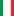 Italy Form: DDWL Form: WLDL |
-0.64 vs -0.02 | 2.66 | 20% | ❌ | ⚽ 1.17 |
📉 Home team has a dip in form recently | 📉 Away team has a dip in form recently |
🏆 Copa América 2024
| Date | Fixture Bold-faced team is selected by AIGoalie to win. |
Odds Pre-match odds of the selected team winning. Note that odds are fetched once per day at 00:00 GMT, meaning some matches may have live odds. Also odds may not be available for all leagues. |
Win How confident AIGoalie is that the selected team will win. Low confidence indicates unpredictability of the match. ▼ |
Result Whether the selected team won, drew, or lost. |
Over The minimum number of goals predicted by AIGoalie. ⚽ = over 0.5 ⚽⚽ = over 1.5 ⚽⚽⚽ = over 2.5 ... ► |
Alerts Home 🏥 = Considerable injuries 🏥🏥 = Major injuries 📉 = Dip in form Note, you may see injuries when expanding match but no alert here, meaning the model does not consider them important. |
Alerts Away 🏥 = Considerable injuries 🏥🏥 = Major injuries 📉 = Dip in form Note, you may see injuries when expanding match but no alert here, meaning the model does not consider them important. |
|
|---|---|---|---|---|---|---|---|---|
| Sun. 30 Jun. | Argentina  2:0  Peru Form: WWWW Form: WDLL |
1.59 vs -1.5 | 1.53 | 76% | ✓ | 😴 0.37 |
📉 Away team has a dip in form recently | |
| Fri. 28 Jun. | Uruguay  02:00  Bolivia Form: WWWL Form: LLLL |
0.86 vs -2.07 | 1.16 | 64% | ⚽⚽ 2.65 |
📉 Home team has a dip in form recently | 📉 Away team has a dip in form recently | |
| Fri. 28 Jun. | Colombia  3:0  Costa Rica Form: WDWW Form: WDLW |
0.79 vs -0.37 | 1.35 | 62% | ✓ | ⚽ 1.4 |
📉 Away team has a dip in form recently | |
| Tue. 02 Jul. | United States 0:1 Uruguay Form: DWLL Form: WWWL |
-0.8 vs 0.41 | 3.1 | 42% | ✓ | ⚽⚽ 2.05 |
📉 Home team has a dip in form recently | 📉 Away team has a dip in form recently |
| Sat. 29 Jun. | Paraguay  1:4  Brazil Form: WLLL Form: DWDL |
-2.04 vs 0.24 | 1.36 | 29% | ✓ | 😴 0.55 |
🏥 📉 Home team has considerable injuries and a dip in form recently | 📉 Away team has a dip in form recently |
| Wed. 03 Jul. | Brazil 1:1 Colombia Form: DWDL Form: WDWW |
-0.08 vs -0.05 | 19% | ⁃ | ⚽ 1.3 |
📉 Home team has a dip in form recently | ||
| Wed. 03 Jul. | Costa Rica 2:1 Paraguay Form: WDLW Form: WLLL |
-0.05 vs -1.2 | 4.4 | 19% | ✓ | 😴 0.5 |
📉 Home team has a dip in form recently | 🏥 📉 Away team has considerable injuries and a dip in form recently |
| Tue. 02 Jul. | Bolivia 1:3  Panama Form: LLLL Form: LWWL |
-1.66 vs -0.09 | 1.68 | 18% | ✓ | ⚽⚽ 2.44 |
📉 Home team has a dip in form recently | 📉 Away team has a dip in form recently |
| Mon. 01 Jul. | Mexico  0:0  Ecuador Form: LWLD Form: LWDL |
-0.79 vs -0.4 | 3.7 | 12% | ⁃ | ⚽ 1.14 |
📉 Home team has a dip in form recently | 📉 Away team has a dip in form recently |
| Sun. 30 Jun. | Canada  0:0  Chile Form: WDWL Form: WDLD |
-0.48 vs -0.93 | 3.1 | 10% | ⁃ | 😴 0.72 |
📉 Home team has a dip in form recently | 🏥 📉 Away team has considerable injuries and a dip in form recently |
| Mon. 01 Jul. | Jamaica  0:3  Venezuela Form: LLLW Form: WLLW |
-1.28 vs -0.69 | 2.08 | 6% | ✓ | ⚽ 1.05 |
🏥🏥 📉 Home team has MAJOR injuries and a dip in form recently | 🏥 📉 Away team has considerable injuries and a dip in form recently |
🌍 Global
| Date | Fixture Bold-faced team is selected by AIGoalie to win. |
Odds Pre-match odds of the selected team winning. Note that odds are fetched once per day at 00:00 GMT, meaning some matches may have live odds. |
Win How confident AIGoalie is that the selected team will win. Low confidence indicates unpredictability of the match. ▼ |
Result Whether the selected team won, drew, or lost. |
Over The minimum number of goals predicted by AIGoalie. ⚽ = over 0.5 ⚽⚽ = over 1.5 ⚽⚽⚽ = over 2.5 ... ► |
Alerts Home 🏥 = Considerable injuries 🏥🏥 = Major injuries 📉 = Dip in form Note, you may see injuries when expanding match but no alert here, meaning the model does not consider them important. |
Alerts Away 🏥 = Considerable injuries 🏥🏥 = Major injuries 📉 = Dip in form Note, you may see injuries when expanding match but no alert here, meaning the model does not consider them important. |
|
|---|---|---|---|---|---|---|---|---|
| Sun. 30 Jun. | FK Istaravshan  postponed 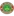 Istiqlol Dushanbe Form: WWDL Form: WWWW |
-1.57 vs 1.69 | 77% | ⚽⚽ 2.46 |
📉 Home team has a dip in form recently | |||
| Sun. 30 Jun. | Argentina 2:0 Peru Form: WWWW Form: WDLL |
1.59 vs -1.5 | 1.53 | 76% | ✓ | 😴 0.37 |
📉 Away team has a dip in form recently | |
| Sun. 30 Jun. | Spain 4:1 Georgia Form: WWWW Form: LDWL |
1.44 vs -1.05 | 1.22 | 74% | ✓ | ⚽⚽⚽ 3.64 |
📉 Away team has a dip in form recently | |
| Sat. 29 Jun. | Shanghai Port  3:1  Zhejiang FC Form: WWWW Form: WLLW |
1.42 vs -1.16 | 1.46 | 74% | ✓ | ⚽⚽⚽ 3.16 |
📉 Away team has a dip in form recently | |
| Sat. 29 Jun. | JK Trans Narva  1:2  FCI Levadia Form: WLLD Form: WWWW |
-1.34 vs 1.3 | 1.02 | 73% | ✓ | ⚽⚽⚽ 3.06 |
📉 Home team has a dip in form recently | |
| Fri. 28 Jun. | Víkingur Göta II  2:1  B71 Sandoy Form: WWWW Form: LWWW |
1.28 vs -1.62 | 73% | ✓ | ⚽⚽ 2.46 |
|||
| Wed. 03 Jul. | Auckland City FC  3:2  Manurewa AFC Form: WDWW Form: LWLL |
1.27 vs -1.97 | 73% | ✓ | ⚽⚽ 2.3 |
📉 Away team has a dip in form recently | ||
| Tue. 02 Jul. | Alianza Universidad  2:0  Pirata FC Form: DWWW Form: WDLW |
1.18 vs -2.03 | 72% | ✓ | ⚽⚽⚽ 3.9 |
📉 Away team has a dip in form recently | ||
| Sun. 30 Jun. | England 2:1 AET Slovakia Form: DWWW Form: WLDL |
1.11 vs -1.21 | 1.45 | 71% | ✓ | ⚽ 1.22 |
📉 Away team has a dip in form recently | |
| Sat. 29 Jun. | Tauranga City AFC  0:5 Auckland City FC Form: WDWL Form: WDWW |
-0.82 vs 1.08 | 71% | ✓ | ⚽⚽ 2.92 |
📉 Home team has a dip in form recently | ||
| Sat. 29 Jun. | Neman Grodno  2:1  FK Smorgon Form: WLWW Form: LWLD |
1.01 vs -2.33 | 70% | ✓ | ⚽⚽ 2.47 |
📉 Home team has a dip in form recently | 📉 Away team has a dip in form recently | |
| Thu. 04 Jul. | FCI Levadia 1:0  FC Flora Tallinn Form: WWWW Form: WDLL |
0.99 vs -1.35 | 70% | ✓ | ⚽⚽ 2.03 |
📉 Away team has a dip in form recently | ||
| Sun. 30 Jun. | Chengdu Rongcheng  4:0  Cangzhou Mighty Lions Form: WWWW Form: LLLD |
0.98 vs -2.74 | 1.16 | 69% | ✓ | ⚽⚽⚽ 3.25 |
📉 Away team has a dip in form recently | |
| Sat. 29 Jun. | Birkenhead United  2:0  Melville United Form: WDWW Form: WLWW |
0.95 vs -1.66 | 1.82 | 68% | ✓ | ⚽⚽⚽ 3.73 |
📉 Away team has a dip in form recently | |
| Mon. 01 Jul. | FK Liepaja  1:3  FC RFS Form: LLLD Form: WWWW |
-1.6 vs 0.91 | 66% | ✓ | ⚽⚽⚽ 3.07 |
📉 Home team has a dip in form recently | ||
| Fri. 28 Jun. | Derry City  5:1  Drogheda United FC Form: WWWL Form: DLLD |
0.89 vs -2.62 | 1.36 | 66% | ✓ | ⚽⚽⚽ 3.02 |
📉 Home team has a dip in form recently | 📉 Away team has a dip in form recently |
| Thu. 04 Jul. | Dinamo Minsk  1:0  Dynamo Brest Form: WWWD Form: WLDL |
0.89 vs -1.8 | 65% | ✓ | ⚽⚽⚽ 3.09 |
📉 Away team has a dip in form recently | ||
| Fri. 28 Jun. | Uruguay 02:00 Bolivia Form: WWWL Form: LLLL |
0.86 vs -2.07 | 1.16 | 64% | ⚽⚽ 2.65 |
📉 Home team has a dip in form recently | 📉 Away team has a dip in form recently | |
| Mon. 01 Jul. | Portugal 3:0 after pens Slovenia Form: WLWL Form: DDDL |
0.83 vs -1.27 | 1.37 | 63% | ✓ | ⚽ 1.85 |
📉 Home team has a dip in form recently | 📉 Away team has a dip in form recently |
| Fri. 28 Jun. | Colombia 3:0 Costa Rica Form: WDWW Form: WDLW |
0.79 vs -0.37 | 1.35 | 62% | ✓ | ⚽ 1.4 |
📉 Away team has a dip in form recently | |
| Sat. 29 Jun. | BATE Borisov  0:2 Dinamo Minsk Form: LWLD Form: WWWD |
-1.07 vs 0.75 | 60% | ✓ | ⚽⚽⚽ 3.54 |
📉 Home team has a dip in form recently | ||
| Sat. 29 Jun. | FC KTP  1:0  Pallokerho-35 Form: LWWD Form: DLLL |
0.74 vs -1.87 | 60% | ✓ | ⚽⚽⚽ 3.07 |
📉 Away team has a dip in form recently | ||
| Sun. 30 Jun. | Yunnan Yukun  5:0  Liaoning Tieren Form: WWLW Form: DWLL |
0.73 vs -2.22 | 1.27 | 59% | ✓ | ⚽⚽ 2.48 |
📉 Home team has a dip in form recently | 📉 Away team has a dip in form recently |
| Sun. 30 Jun. | New Taipei City Hang Yuan FC  1:1  Tainan City Taiwan Steel Form: LLDD Form: WWWD |
-1.79 vs 0.72 | 1.12 | 59% | ⁃ | ⚽⚽ 2.49 |
📉 Home team has a dip in form recently | |
| Fri. 28 Jun. | Sarpsborg 08 FF  1:2  FK Bodø/Glimt Form: WWWL Form: DWWW |
-1.01 vs 0.69 | 1.71 | 58% | ✓ | ⚽⚽⚽ 3.55 |
📉 Home team has a dip in form recently | |
| Mon. 01 Jul. | Santos FC  1:0  Associação Chapecoense de Futebol Form: WDWW Form: LLLW |
0.68 vs -2.17 | 1.44 | 57% | ✓ | ⚽ 1.32 |
🏥 Home team has considerable injuries | 📉 Away team has a dip in form recently |
| Sat. 29 Jun. | FF Jaro  1:0  JIPPO Joensuu Form: DWWW Form: LDLW |
0.65 vs -1.75 | 56% | ✓ | ⚽ 1.55 |
📉 Away team has a dip in form recently | ||
| Wed. 03 Jul. | FC Inter Turku  3:2  Turun Palloseura Form: WWWW Form: WWLD |
0.61 vs -0.86 | 55% | ✓ | ⚽⚽ 2.3 |
📉 Away team has a dip in form recently | ||
| Thu. 04 Jul. | Paide Linnameeskond 2:2 JK Trans Narva Form: LWDW Form: WLLD |
0.61 vs -1.86 | 1.62 | 54% | ⁃ | ⚽⚽ 2.78 |
📉 Away team has a dip in form recently | |
| Sun. 30 Jun. | Los Angeles FC  3:0 Colorado Rapids Form: WWWL Form: WLWW |
0.59 vs -0.91 | 1.49 | 54% | ✓ | ⚽⚽ 2.33 |
📉 Home team has a dip in form recently | 📉 Away team has a dip in form recently |
| Sat. 29 Jun. | SJK Seinäjoki  2:1  FC Haka Form: WWWW Form: WLWW |
0.59 vs -0.45 | 1.74 | 53% | ✓ | ⚽⚽ 2.67 |
📉 Away team has a dip in form recently | |
| Sat. 29 Jun. | Gimcheon Sangmu  2:0  Daegu FC Form: WWDL Form: LLDD |
0.57 vs -2.29 | 2.14 | 53% | ✓ | ⚽ 1.49 |
📉 Home team has a dip in form recently | 📉 Away team has a dip in form recently |
| Sun. 30 Jun. | Seattle Sounders FC  2:1  Chicago Fire FC Form: WWWW Form: LLWL |
0.55 vs -1.73 | 1.71 | 52% | ✓ | ⚽ 1.69 |
📉 Away team has a dip in form recently | |
| Sun. 30 Jun. | Qingdao West Coast 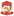 0:1  Shanghai Shenhua Form: WLLL Form: WWWW |
-1.61 vs 0.55 | 1.26 | 52% | ✓ | ⚽ 1.72 |
📉 Home team has a dip in form recently | |
| Tue. 02 Jul. | Sociedade Esportiva Palmeiras  2:0  Sport Club Corinthians Paulista Form: LWDW Form: LWLL |
0.53 vs -2.32 | 51% | ✓ | ⚽ 1.8 |
🏥🏥 Home team has MAJOR injuries | 🏥 📉 Away team has considerable injuries and a dip in form recently | |
| Thu. 04 Jul. | Columbus Crew 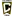 2:0  Nashville SC Form: WWWW Form: WLLL |
0.52 vs -1.51 | 1.22 | 51% | ✓ | ⚽⚽ 2.48 |
📉 Away team has a dip in form recently | |
| Fri. 28 Jun. | Cork City FC  1:0  Bray Wanderers Form: WWWW Form: LWLL |
0.51 vs -1.16 | 1.56 | 50% | ✓ | ⚽ 1.28 |
📉 Away team has a dip in form recently | |
| Fri. 28 Jun. | CD Magallanes  01:00  CDP Curicó Unido Form: WLWW Form: DWWL |
0.5 vs -1.22 | 1.12 | 50% | ⚽⚽ 2.13 |
📉 Home team has a dip in form recently | 📉 Away team has a dip in form recently | |
| Fri. 28 Jun. | FC San Marcos  6:0  ADA Jaén Form: WWWL Form: WDLW |
0.5 vs -1.85 | 1.04 | 50% | ✓ | ⚽⚽⚽⚽ 4.14 |
📉 Home team has a dip in form recently | 📉 Away team has a dip in form recently |
| Thu. 04 Jul. | D.C. United  2:3  FC Cincinnati Form: LDLL Form: LWWW |
-1.76 vs 0.5 | 2.7 | 50% | ✓ | ⚽⚽ 2.93 |
📉 Home team has a dip in form recently | |
| Wed. 03 Jul. | SJK Seinäjoki 2:0  AC Oulu Form: WWWW Form: WWLL |
0.48 vs -1.27 | 1.67 | 49% | ✓ | ⚽⚽⚽ 3.28 |
📉 Away team has a dip in form recently | |
| Fri. 28 Jun. | Sogdiana Jizzakh  4:2  Dinamo Samarqand Form: WWWW Form: LWDL |
0.47 vs -1.5 | 48% | ✓ | ⚽⚽ 2.09 |
📉 Away team has a dip in form recently | ||
| Sun. 30 Jun. | Athletic Club Taipei  5:0  Ming Chuan University Form: WLLW Form: WLDL |
0.46 vs -2.41 | 1.17 | 47% | ✓ | ⚽ 1.93 |
📉 Home team has a dip in form recently | 📉 Away team has a dip in form recently |
| Sat. 29 Jun. | Degerfors IF 4:1  Sandvikens IF Form: DWWL Form: WWWL |
0.45 vs -0.88 | 2.32 | 46% | ✓ | ⚽⚽ 2.54 |
📉 Home team has a dip in form recently | 📉 Away team has a dip in form recently |
| Sat. 29 Jun. | Víkingur Gøta  4:0 EB/Streymur Form: LLWD Form: WWLW |
0.45 vs -1.14 | 1.01 | 46% | ✓ | ⚽⚽ 2.68 |
📉 Home team has a dip in form recently | 📉 Away team has a dip in form recently |
| Tue. 02 Jul. | Romania 0:3 Netherlands Form: WLDL Form: LWWL |
-1.24 vs 0.44 | 1.48 | 45% | ✓ | 😴 0.81 |
📉 Home team has a dip in form recently | 📉 Away team has a dip in form recently |
| Fri. 28 Jun. | KÍ Klaksvík  18:30  NSÍ Runavík Form: LWWW Form: LLLW |
0.43 vs -1.31 | 45% | ⚽⚽ 2.42 |
📉 Away team has a dip in form recently | |||
| Thu. 04 Jul. | Manta FC  1:2  AD Nueve de Octubre Form: WWLW Form: LLWW |
0.42 vs -1.5 | 2.34 | 44% | ❌ | ⚽ 1.07 |
📉 Home team has a dip in form recently | 📉 Away team has a dip in form recently |
| Fri. 28 Jun. | São Paulo Futebol Clube  2:1  Criciúma Esporte Clube Form: WWWW Form: WDWW |
0.42 vs -1.27 | 44% | ✓ | ⚽⚽ 2.04 |
🏥 Home team has considerable injuries | ||
| Sun. 30 Jun. | Landskrona BoIS  4:3  Östersunds FK Form: WWWW Form: LDWL |
0.41 vs -1.0 | 1.88 | 43% | ✓ | ⚽⚽ 2.04 |
📉 Away team has a dip in form recently | |
| Tue. 02 Jul. | United States 0:1 Uruguay Form: DWLL Form: WWWL |
-0.8 vs 0.41 | 3.1 | 42% | ✓ | ⚽⚽ 2.05 |
📉 Home team has a dip in form recently | 📉 Away team has a dip in form recently |
| Sun. 30 Jun. | Futuro  2:1  Taiwan Power Company Form: WWWW Form: LWWL |
0.4 vs -0.86 | 1.21 | 42% | ✓ | ⚽ 1.85 |
📉 Away team has a dip in form recently | |
| Fri. 28 Jun. | Athlone Town AFC 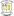 1:0  Treaty United Form: DLWW Form: WWLL |
0.4 vs -1.71 | 1.97 | 42% | ✓ | ⚽ 1.38 |
📉 Home team has a dip in form recently | 📉 Away team has a dip in form recently |
| Thu. 04 Jul. | FCSB  3:0  CS Corvinul 1921 Hunedoara Form: LLWW Form: WLWL |
0.4 vs -1.88 | 1.43 | 42% | ✓ | ⚽ 1.9 |
📉 Home team has a dip in form recently | 📉 Away team has a dip in form recently |
| Wed. 03 Jul. | Dinamo Tbilisi  1:2  Torpedo Kutaisi Form: WWLL Form: WWWW |
-0.76 vs 0.4 | 42% | ✓ | ⚽⚽ 2.48 |
📉 Home team has a dip in form recently | ||
| Thu. 04 Jul. | FC Khan Tengri  4:2  Kaysar Zhas Kyzylorda Form: WWLW Form: LLLL |
0.38 vs -2.19 | 40% | ✓ | ⚽ 1.62 |
📉 Home team has a dip in form recently | 📉 Away team has a dip in form recently | |
| Sat. 29 Jun. | Guangxi Pingguo Haliao  1:1  Chongqing Tonglianglong Form: DWWD Form: WWLD |
0.37 vs -0.74 | 1.63 | 40% | ⁃ | ⚽ 1.54 |
📉 Away team has a dip in form recently | |
| Sat. 29 Jun. | Eastern Suburbs AFC  1:2  East Coast Bays AFC Form: WWLL Form: LWLW |
0.36 vs -1.47 | 39% | ❌ | ⚽ 1.61 |
📉 Home team has a dip in form recently | 📉 Away team has a dip in form recently | |
| Sun. 30 Jun. | CSD Colo-Colo 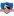 3:1  CD O'Higgins Form: WDWD Form: WWDL |
0.34 vs -1.87 | 1.55 | 37% | ✓ | ⚽ 1.79 |
📉 Home team has a dip in form recently | 📉 Away team has a dip in form recently |
| Sat. 29 Jun. | Gimpo FC  1:1  Cheonan City Form: WDDD Form: WLDL |
0.31 vs -1.77 | 1.88 | 35% | ⁃ | ⚽ 1.27 |
📉 Home team has a dip in form recently | 📉 Away team has a dip in form recently |
| Sun. 30 Jun. | JEF United Chiba  2:1 Kagoshima United Form: LWLW Form: WWLL |
0.3 vs -1.89 | 1.58 | 34% | ✓ | ⚽ 1.99 |
📉 Home team has a dip in form recently | 📉 Away team has a dip in form recently |
| Fri. 28 Jun. | Ravshan Kulob  2:1  Barqchi Hisor Form: DDWW Form: LLLL |
0.3 vs -2.77 | 34% | ✓ | ⚽ 1.69 |
📉 Away team has a dip in form recently | ||
| Fri. 28 Jun. | SD Family Astana  3:0 FC Khan Tengri Form: LWWW Form: WWLW |
0.29 vs -0.45 | 34% | ✓ | ⚽⚽ 2.31 |
📉 Away team has a dip in form recently | ||
| Thu. 04 Jul. | FC Turkistan  0:2  Okzhetpes Kokshetau Form: LLLD Form: WWWW |
-1.33 vs 0.29 | 34% | ✓ | ⚽ 1.45 |
📉 Home team has a dip in form recently | ||
| Thu. 04 Jul. | TB Tvøroyri  0:1 Víkingur Göta II Form: DWDW Form: WWWW |
-0.72 vs 0.29 | 33% | ✓ | ⚽ 1.78 |
|||
| Sun. 30 Jun. | New Zealand  3:0  Vanuatu Form: WWWW Form: WLWL |
0.29 vs -1.38 | 33% | ✓ | ⚽⚽ 2.36 |
📉 Away team has a dip in form recently | ||
| Sun. 30 Jun. | CR Flamengo  2:1  Cruzeiro Esporte Clube Form: LWWD Form: WLLL |
0.28 vs -2.08 | 1.72 | 33% | ✓ | ⚽ 1.2 |
🏥🏥 Home team has MAJOR injuries | 📉 Away team has a dip in form recently |
| Fri. 28 Jun. | FC Inter Turku 3:1  Vaasan Palloseura Form: WWWW Form: DLLL |
0.28 vs -0.9 | 2.58 | 33% | ✓ | ⚽⚽ 2.39 |
📉 Away team has a dip in form recently | |
| Sat. 29 Jun. | Germany 2:0 Denmark Form: WDWL Form: DDDL |
0.28 vs -0.59 | 1.66 | 33% | ✓ | ⚽ 1.07 |
📉 Home team has a dip in form recently | 📉 Away team has a dip in form recently |
| Mon. 01 Jul. | France 1:0 Belgium Form: DWWL Form: LWDL |
0.28 vs -0.68 | 2.0 | 32% | ✓ | 😴 0.9 |
📉 Home team has a dip in form recently | 📉 Away team has a dip in form recently |
| Sat. 29 Jun. | Gimnasia y Esgrima de Mendoza  1:0  CA Chaco For Ever Form: DWWD Form: DLLL |
0.28 vs -2.04 | 2.06 | 32% | ✓ | ⚽⚽ 2.13 |
📉 Away team has a dip in form recently | |
| Sat. 29 Jun. | Turun Palloseura 1:0  SJK Seinäjoki II Form: WWLD Form: LLLL |
0.28 vs -2.04 | 32% | ✓ | ⚽⚽ 2.24 |
📉 Home team has a dip in form recently | 📉 Away team has a dip in form recently | |
| Sun. 30 Jun. | Colorado Springs Switchbacks FC  1:0  Monterey Bay FC Form: WDWW Form: LWLW |
0.27 vs -1.44 | 32% | ✓ | ⚽ 1.18 |
📉 Away team has a dip in form recently | ||
| Thu. 04 Jul. | Charlotte FC  1:2  Inter Miami CF Form: DWLL Form: WWWL |
-1.04 vs 0.27 | 3.55 | 31% | ✓ | ⚽⚽ 2.59 |
📉 Home team has a dip in form recently | 🏥🏥 📉 Away team has MAJOR injuries and a dip in form recently |
| Sat. 29 Jun. | CA Temperley  1:0  CA Brown (Adrogué) Form: WWWD Form: DDLD |
0.26 vs -2.26 | 1.78 | 30% | ✓ | ⚽ 1.59 |
📉 Away team has a dip in form recently | |
| Fri. 28 Jun. | AB Argir  6:0  KÍ Klaksvík II Form: DWLL Form: LWWW |
-1.19 vs 0.25 | 30% | ❌ | ⚽⚽⚽ 3.24 |
📉 Home team has a dip in form recently | ||
| Sun. 30 Jun. | FK Tukums 2000 II  1:4 JDFS Alberts Form: LLLL Form: WLWW |
-1.45 vs 0.25 | 30% | ✓ | ⚽⚽ 2.62 |
📉 Home team has a dip in form recently | 📉 Away team has a dip in form recently | |
| Sun. 30 Jun. | Riga FC II  2:1  Valmiera FC II Form: WDWW Form: LWLL |
0.25 vs -1.42 | 30% | ✓ | ⚽⚽ 2.23 |
📉 Away team has a dip in form recently | ||
| Sat. 29 Jun. | CD Universidad Católica 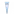 2:2  Santiago Wanderers Form: LWLD Form: WWDD |
0.25 vs -1.28 | 1.15 | 30% | ⁃ | ⚽ 1.82 |
📉 Home team has a dip in form recently | 📉 Away team has a dip in form recently |
| Sun. 30 Jun. | Belshina Bobruisk  1:0  BATE 2 Borisov Form: DWWW Form: LWLW |
0.25 vs -0.95 | 30% | ✓ | ⚽ 1.85 |
📉 Away team has a dip in form recently | ||
| Sat. 29 Jun. | Paraguay 1:4 Brazil Form: WLLL Form: DWDL |
-2.04 vs 0.24 | 1.36 | 29% | ✓ | 😴 0.55 |
🏥 📉 Home team has considerable injuries and a dip in form recently | 📉 Away team has a dip in form recently |
| Sun. 30 Jun. | Nashville SC 1:2 Inter Miami CF Form: WLLL Form: WWWL |
-1.31 vs 0.24 | 1.09 | 29% | ✓ | ⚽⚽⚽ 3.45 |
📉 Home team has a dip in form recently | 🏥🏥 📉 Away team has MAJOR injuries and a dip in form recently |
| Sun. 30 Jun. | CA Aldosivi  1:0  CSD Madryn Form: DWLW Form: DWLW |
0.24 vs -1.01 | 2.24 | 29% | ✓ | 😴 0.04 |
📉 Home team has a dip in form recently | 📉 Away team has a dip in form recently |
| Fri. 28 Jun. | Dinamo Batumi  5:6 after pens Torpedo Kutaisi Form: DLWL Form: WWWW |
-0.82 vs 0.23 | 3.05 | 28% | ✓ | ⚽⚽ 2.71 |
📉 Home team has a dip in form recently | |
| Sun. 30 Jun. | Portland Timbers  3:2  Minnesota United FC Form: WWLW Form: LLLL |
0.23 vs -1.85 | 1.81 | 28% | ✓ | ⚽⚽⚽ 3.06 |
📉 Home team has a dip in form recently | 📉 Away team has a dip in form recently |
| Thu. 04 Jul. | Esporte Clube Bahia  2:0  Esporte Clube Juventude Form: LWLW Form: WLLL |
0.21 vs -2.04 | 27% | ✓ | ⚽⚽ 2.42 |
📉 Home team has a dip in form recently | 📉 Away team has a dip in form recently | |
| Sat. 29 Jun. | Moca FC  Unknown  Cibao FC Form: WWWW Form: WWDD |
0.21 vs -0.66 | 27% | 😴 0.92 |
📉 Away team has a dip in form recently | |||
| Sun. 30 Jun. | Ha Noi FC  3:3  Becamex Binh Duong FC Form: WDWL Form: LLDD |
0.19 vs -2.18 | 26% | ⁃ | ⚽⚽ 2.8 |
📉 Home team has a dip in form recently | 📉 Away team has a dip in form recently | |
| Sun. 30 Jun. | FC Dallas  0:1 FC Cincinnati Form: LWLL Form: LWWW |
-1.26 vs 0.19 | 1.51 | 25% | ✓ | ⚽⚽ 2.74 |
🏥🏥 📉 Home team has MAJOR injuries and a dip in form recently | |
| Sat. 29 Jun. | Iwaki FC  0:4  Yokohama FC Form: LLLL Form: WWWL |
-1.29 vs 0.19 | 2.14 | 25% | ✓ | ⚽ 1.55 |
📉 Home team has a dip in form recently | 📉 Away team has a dip in form recently |
| Sat. 29 Jun. | Suzhou Dongwu  1:0  Shijiazhuang Gongfu Form: WLWW Form: DLLL |
0.19 vs -1.65 | 3.6 | 25% | ✓ | ⚽ 1.69 |
📉 Home team has a dip in form recently | 📉 Away team has a dip in form recently |
| Thu. 04 Jul. | FK Ulytau  2:1 Altay Oskemen Form: LWWD Form: WWDL |
0.19 vs -0.95 | 25% | ✓ | ⚽ 1.04 |
📉 Away team has a dip in form recently | ||
| Sun. 30 Jun. | São Paulo Futebol Clube 3:1 Esporte Clube Bahia Form: WWWW Form: LWLW |
0.18 vs -0.73 | 25% | ✓ | ⚽⚽ 2.82 |
🏥 Home team has considerable injuries | 📉 Away team has a dip in form recently | |
| Sun. 30 Jun. | 07 Vestur  1:0  ÍF Fuglafjördur Form: LWWL Form: LLLL |
0.18 vs -3.08 | 24% | ✓ | ⚽⚽ 2.35 |
📉 Home team has a dip in form recently | 📉 Away team has a dip in form recently | |
| Sat. 29 Jun. | Ordabasy Shymkent  2:1  Kaysar Kyzylorda Form: WWDD Form: DWLL |
0.18 vs -1.46 | 24% | ✓ | ⚽ 1.41 |
📉 Home team has a dip in form recently | 📉 Away team has a dip in form recently | |
| Sun. 30 Jun. | Stade Tunisien  2:0  Club Athlétique Bizertin Form: DWWW Form: WWWL |
0.18 vs -0.99 | 1.09 | 24% | ✓ | 😴 0.71 |
📉 Away team has a dip in form recently | |
| Sun. 30 Jun. | Quang Nam FC 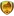 1:3 Thep Xanh Nam Dinh FC Form: WWLL Form: WWWL |
-1.13 vs 0.17 | 1.81 | 24% | ✓ | ⚽⚽ 2.69 |
📉 Home team has a dip in form recently | 📉 Away team has a dip in form recently |
| Sun. 30 Jun. | CA San Martín (San Juan)  1:0  CA Güemes Form: DDWL Form: DLLD |
0.17 vs -2.39 | 1.75 | 23% | ✓ | 😴 0.63 |
📉 Home team has a dip in form recently | 📉 Away team has a dip in form recently |
| Thu. 04 Jul. | University College Dublin  1:2 Athlone Town AFC Form: WDDL Form: DLWW |
-1.37 vs 0.17 | 23% | ✓ | ⚽ 1.57 |
📉 Home team has a dip in form recently | 📉 Away team has a dip in form recently | |
| Sun. 30 Jun. | CF América  2:1  Tigres UANL Form: DWWL Form: LDLW |
0.17 vs -1.42 | 2.54 | 23% | ✓ | ⚽ 1.78 |
📉 Home team has a dip in form recently | 📉 Away team has a dip in form recently |
| Sun. 30 Jun. | Beijing Guoan  2:0  Shandong Taishan Form: LWWW Form: WDLL |
0.16 vs -1.05 | 2.68 | 23% | ✓ | ⚽⚽ 2.63 |
📉 Away team has a dip in form recently | |
| Sun. 30 Jun. | BK Maxline Vitebsk  1:2  FK Baranovichi Form: LWLL Form: LLWD |
0.15 vs -1.9 | 22% | ❌ | ⚽⚽ 2.45 |
📉 Home team has a dip in form recently | 📉 Away team has a dip in form recently | |
| Sun. 30 Jun. | Taiwan Leopard Cat FC  3:3  Taipei Vikings Form: LWLD Form: LLWD |
0.15 vs -2.13 | 1.1 | 22% | ⁃ | ⚽⚽⚽ 3.4 |
📉 Home team has a dip in form recently | 📉 Away team has a dip in form recently |
| Sun. 30 Jun. | Vissel Kobe  3:1  Kashima Antlers Form: DWWW Form: DLWW |
0.13 vs -0.85 | 1.98 | 21% | ✓ | ⚽⚽ 2.13 |
📉 Away team has a dip in form recently | |
| Sun. 30 Jun. | Viking FK  4:2  Rosenborg BK Form: WDWW Form: WDLW |
0.13 vs -0.95 | 1.73 | 21% | ✓ | ⚽⚽⚽ 3.29 |
📉 Away team has a dip in form recently | |
| Sun. 30 Jun. | Nasaf Qarshi 3:2  Navbahor Namangan Form: LWDW Form: DLLW |
0.12 vs -1.35 | 20% | ✓ | ⚽ 1.3 |
📉 Away team has a dip in form recently | ||
| Sun. 30 Jun. | CD Ñublense  4:0  Rangers de Talca Form: WDWL Form: WLDW |
0.11 vs -1.18 | 19% | ✓ | ⚽ 1.96 |
📉 Home team has a dip in form recently | 📉 Away team has a dip in form recently | |
| Sun. 30 Jun. | Volna Pinsk  3:2  FK Ostrovets Form: WLWW Form: DWLD |
0.11 vs -1.4 | 19% | ✓ | ⚽⚽ 2.3 |
📉 Home team has a dip in form recently | 📉 Away team has a dip in form recently | |
| Fri. 28 Jun. | Leevon PPK  1:2  FK RFS II Form: LWLW Form: WWWW |
0.02 vs 0.11 | 19% | ✓ | ⚽ 1.8 |
📉 Home team has a dip in form recently | ||
| Sat. 29 Jun. | Niva Dolbizno  0:0  FK Molodechno Form: WWDD Form: LWDW |
0.11 vs -0.26 | 19% | ⁃ | ⚽⚽ 2.72 |
📉 Home team has a dip in form recently | ||
| Sat. 29 Jun. | Club Deportes Iquique  3:1  Deportes Antofagasta Form: WLWW Form: DWWL |
0.1 vs -0.93 | 1.05 | 18% | ✓ | ⚽⚽⚽ 3.0 |
📉 Home team has a dip in form recently | 📉 Away team has a dip in form recently |
| Tue. 02 Jul. | Valmiera FC  2:2  Riga FC Form: WLDW Form: WWDW |
0.1 vs -0.08 | 3.85 | 18% | ⁃ | ⚽ 1.69 |
📉 Home team has a dip in form recently | |
| Sat. 29 Jun. | Tokushima Vortis  2:2  V-Varen Nagasaki Form: WDWL Form: WDWW |
-0.63 vs 0.09 | 2.2 | 17% | ⁃ | ⚽ 1.94 |
📉 Home team has a dip in form recently | |
| Sun. 30 Jun. | New England Revolution  1:5 Columbus Crew Form: WLWL Form: WWWW |
-0.62 vs 0.09 | 17% | ✓ | ⚽⚽ 2.8 |
🏥 📉 Home team has considerable injuries and a dip in form recently | ||
| Sun. 30 Jun. | Isloch Minsk Region  1:1  Dnepr Mogilev Form: LDWW Form: LLDL |
0.09 vs -2.11 | 17% | ⁃ | ⚽ 1.49 |
📉 Away team has a dip in form recently | ||
| Thu. 04 Jul. | Shamrock Rovers  1:0  Dundalk FC Form: LWLD Form: LWLL |
0.07 vs -2.07 | 1.41 | 16% | ✓ | ⚽ 1.46 |
📉 Home team has a dip in form recently | 📉 Away team has a dip in form recently |
| Fri. 28 Jun. | Cuniburo FC  1:0  Guayaquil City FC Form: WWWW Form: WWLL |
0.03 vs -1.54 | 13% | ✓ | ⚽ 1.19 |
📉 Away team has a dip in form recently | ||
| Sun. 30 Jun. | Shimizu S-Pulse  3:1  Fagiano Okayama Form: LWWL Form: WWLW |
0.03 vs -1.36 | 2.02 | 12% | ✓ | ⚽⚽ 2.1 |
📉 Home team has a dip in form recently | 📉 Away team has a dip in form recently |
| Wed. 03 Jul. | Kalju FC  4:2  Pärnu JK Vaprus Form: DWDW Form: LWLL |
0.02 vs -2.03 | 1.53 | 12% | ✓ | ⚽⚽ 2.05 |
📉 Away team has a dip in form recently | |
| Thu. 04 Jul. | Dong A Thanh Hoa FC  2:1 Thep Xanh Nam Dinh FC Form: LDWW Form: WWWL |
-0.86 vs 0.02 | 11% | ❌ | ⚽⚽⚽ 3.41 |
🏥 Home team has considerable injuries | 📉 Away team has a dip in form recently | |
| Sat. 29 Jun. | Botafogo FC  1:1  Sport Club do Recife Form: WWDL Form: DWDW |
-0.54 vs 0.01 | 2.48 | 11% | ⁃ | ⚽ 1.44 |
📉 Home team has a dip in form recently | |
| Sun. 30 Jun. | Las Vegas Lights FC  2:0  Pittsburgh Riverhounds SC Form: DDWW Form: LDLL |
0.01 vs -2.07 | 2.84 | 11% | ✓ | ⚽ 1.22 |
📉 Away team has a dip in form recently | |
| Sat. 29 Jun. | Shakhter Soligorsk  1:0  Torpedo-BelAZ Zhodino Form: DWWW Form: WLWL |
-0.66 vs 0.01 | 11% | ❌ | ⚽ 1.55 |
📉 Away team has a dip in form recently | ||
| Thu. 04 Jul. | Real Salt Lake City  3:2 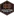 Houston Dynamo FC Form: WLWW Form: DWWL |
0.0 vs -1.15 | 1.81 | 10% | ✓ | ⚽⚽⚽ 3.06 |
📉 Home team has a dip in form recently | 📉 Away team has a dip in form recently |
| Sat. 29 Jun. | Charleston Battery  5:2  North Carolina FC Form: LDWW Form: WDLW |
0.0 vs -1.14 | 10% | ✓ | ⚽ 1.96 |
📉 Away team has a dip in form recently | ||
| Thu. 04 Jul. | New Mexico United 2:0  Orange County SC Form: LWWL Form: WLLW |
-0.0 vs -0.93 | 1.61 | 20% | ✓ | ⚽ 1.66 |
📉 Home team has a dip in form recently | 📉 Away team has a dip in form recently |
| Sat. 29 Jun. | Comerciantes FC  1:0  Santos FC Nazca Form: DWDW Form: WDLD |
-0.01 vs -1.73 | 1.52 | 20% | ✓ | 😴 0.81 |
📉 Away team has a dip in form recently | |
| Thu. 04 Jul. | New York City FC  2:0  CF Montréal Form: LWWL Form: LWLD |
-0.01 vs -1.94 | 1.44 | 20% | ✓ | ⚽ 1.48 |
📉 Home team has a dip in form recently | 📉 Away team has a dip in form recently |
| Sat. 29 Jun. | FK Orsha  2:2  Energetik-BGU Minsk Form: WWDW Form: LLDD |
-0.01 vs -2.04 | 20% | ⁃ | ⚽ 1.75 |
📉 Away team has a dip in form recently | ||
| Sun. 30 Jun. | Gamba Osaka  1:3  Machida Zelvia Form: DLWW Form: DDWW |
-0.01 vs -0.19 | 3.45 | 20% | ❌ | ⚽ 1.57 |
📉 Home team has a dip in form recently | 🏥 Away team has considerable injuries |
| Fri. 28 Jun. | B68 Toftir  1:0  HB Tórshavn Form: DLLD Form: LLLW |
-2.13 vs -0.01 | 1.06 | 20% | ❌ | ⚽⚽ 2.29 |
📉 Home team has a dip in form recently | 📉 Away team has a dip in form recently |
| Thu. 04 Jul. | Grêmio Foot-Ball Porto Alegrense  2:2 Sociedade Esportiva Palmeiras Form: WDWL Form: LWDW |
-1.32 vs -0.02 | 20% | ⁃ | ⚽ 1.99 |
🏥 📉 Home team has considerable injuries and a dip in form recently | 🏥🏥 Away team has MAJOR injuries | |
| Sat. 29 Jun. | Switzerland 2:0 Italy Form: DDWL Form: WLDL |
-0.64 vs -0.02 | 2.66 | 20% | ❌ | ⚽ 1.17 |
📉 Home team has a dip in form recently | 📉 Away team has a dip in form recently |
| Thu. 04 Jul. | Sligo Rovers  2:1 Derry City Form: LLWW Form: WWWL |
-0.81 vs -0.03 | 1.7 | 19% | ❌ | ⚽⚽ 2.05 |
📉 Home team has a dip in form recently | 📉 Away team has a dip in form recently |
| Sun. 30 Jun. | CA Nueva Chicago  0:0  CA Defensores de Belgrano Form: DWDW Form: WLDD |
-0.03 vs -1.15 | 2.38 | 19% | ⁃ | 😴 0.85 |
📉 Away team has a dip in form recently | |
| Sun. 30 Jun. | AA Estudiantes (Río Cuarto)  2:1  CA Defensores Unidos (Zarate) Form: WLWD Form: LWLW |
-0.03 vs -1.71 | 1.88 | 19% | ✓ | 😴 0.9 |
📉 Home team has a dip in form recently | 📉 Away team has a dip in form recently |
| Fri. 28 Jun. | FC Kuressaare 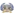 0:2 Paide Linnameeskond Form: DLWD Form: LWDW |
-1.38 vs -0.04 | 1.43 | 19% | ✓ | ⚽⚽ 2.47 |
📉 Home team has a dip in form recently | |
| Sun. 30 Jun. | Fortaleza Esporte Clube  2:1 Esporte Clube Juventude Form: WWLW Form: WLLL |
-0.04 vs -1.9 | 1.73 | 19% | ✓ | ⚽⚽ 2.18 |
🏥 📉 Home team has considerable injuries and a dip in form recently | 📉 Away team has a dip in form recently |
| Sat. 29 Jun. | FK Eskhata  0:2  FK Khujand Form: LWWW Form: DDDW |
-0.04 vs -1.26 | 19% | ❌ | ⚽ 1.37 |
📉 Away team has a dip in form recently | ||
| Wed. 03 Jul. | Brazil 1:1 Colombia Form: DWDL Form: WDWW |
-0.08 vs -0.05 | 19% | ⁃ | ⚽ 1.3 |
📉 Home team has a dip in form recently | ||
| Wed. 03 Jul. | Costa Rica 2:1 Paraguay Form: WDLW Form: WLLL |
-0.05 vs -1.2 | 4.4 | 19% | ✓ | 😴 0.5 |
📉 Home team has a dip in form recently | 🏥 📉 Away team has considerable injuries and a dip in form recently |
| Sun. 30 Jun. | CD Palestino  3:0  AC Barnechea Form: WLWD Form: DWWL |
-0.06 vs -1.23 | 1.51 | 19% | ✓ | ⚽ 1.55 |
📉 Home team has a dip in form recently | 📉 Away team has a dip in form recently |
| Sun. 30 Jun. | Fjölnir Reykjavík  5:2 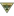 ÍF Grótta Form: WLDW Form: DWDW |
-0.07 vs -1.2 | 19% | ✓ | ⚽⚽ 2.18 |
📉 Home team has a dip in form recently | ||
| Thu. 04 Jul. | Wexford FC  1:3 Cork City FC Form: DLDL Form: WWWW |
-1.12 vs -0.08 | 1.86 | 18% | ✓ | ⚽ 1.39 |
📉 Home team has a dip in form recently | |
| Fri. 28 Jun. | NSÍ Runavík 1:2 KÍ Klaksvík Form: LLLW Form: LWWW |
-0.73 vs -0.09 | 18% | ✓ | ⚽⚽ 2.42 |
📉 Home team has a dip in form recently | ||
| Sun. 30 Jun. | ZSKA Dushanbe  0:0  Panjshir Balch Form: DDWL Form: DLWL |
-0.09 vs -1.84 | 18% | ⁃ | 😴 0.81 |
📉 Home team has a dip in form recently | 📉 Away team has a dip in form recently | |
| Sun. 30 Jun. | ZSKA Dushanbe 0:0 Panjshir Balch Form: DDWL Form: DLWL |
-0.09 vs -1.84 | 18% | ⁃ | 😴 0.81 |
📉 Home team has a dip in form recently | 📉 Away team has a dip in form recently | |
| Tue. 02 Jul. | Bolivia 1:3 Panama Form: LLLL Form: LWWL |
-1.66 vs -0.09 | 1.68 | 18% | ✓ | ⚽⚽ 2.44 |
📉 Home team has a dip in form recently | 📉 Away team has a dip in form recently |
| Fri. 28 Jun. | Cobh Ramblers FC  2:2 University College Dublin Form: WLDW Form: WDDL |
-0.11 vs -1.54 | 18% | ⁃ | ⚽⚽ 2.05 |
📉 Home team has a dip in form recently | 📉 Away team has a dip in form recently | |
| Wed. 03 Jul. | Loudoun United FC  3:0  Hartford Athletic Form: DDWW Form: WLLL |
-0.11 vs -1.74 | 1.74 | 18% | ✓ | ⚽⚽ 2.15 |
📉 Away team has a dip in form recently | |
| Sun. 30 Jun. | Club Atlético San Martín (Tucumán)  2:1  CD Maipú Form: DLWL Form: WLLW |
-0.11 vs -0.99 | 1.77 | 18% | ✓ | ⚽ 1.17 |
📉 Home team has a dip in form recently | 📉 Away team has a dip in form recently |
| Thu. 04 Jul. | Clube de Regatas Vasco da Gama  2:0 Fortaleza Esporte Clube Form: DWWW Form: WWLW |
-0.12 vs -0.96 | 2.56 | 18% | ✓ | ⚽⚽⚽ 3.07 |
🏥 📉 Away team has considerable injuries and a dip in form recently | |
| Sun. 30 Jun. | San Jose Earthquakes  0:3  Los Angeles Galaxy Form: LLLW Form: WWLW |
-1.3 vs -0.12 | 2.42 | 18% | ✓ | ⚽⚽ 2.62 |
📉 Home team has a dip in form recently | 📉 Away team has a dip in form recently |
| Wed. 03 Jul. | Víkingur Reykjavík  20:15  Fylkir Reykjavík Form: DLLD Form: LWLD |
-0.12 vs -1.61 | 18% | ⚽⚽⚽ 3.19 |
📉 Home team has a dip in form recently | 📉 Away team has a dip in form recently | ||
| Sun. 30 Jun. | Urawa Red Diamonds  3:0  Júbilo Iwata Form: DWWL Form: DWLD |
-0.13 vs -1.8 | 17% | ✓ | ⚽ 1.83 |
🏥 📉 Home team has considerable injuries and a dip in form recently | 📉 Away team has a dip in form recently | |
| Sun. 30 Jun. | Vancouver Whitecaps FC  4:3  St. Louis CITY SC Form: WWDW Form: DLWL |
-0.13 vs -1.98 | 1.69 | 17% | ✓ | ⚽⚽ 2.54 |
📉 Away team has a dip in form recently | |
| Fri. 28 Jun. | SK Brann  0:0  Strømsgodset IF Form: WWDL Form: WDDD |
-0.13 vs -0.96 | 1.39 | 17% | ⁃ | ⚽⚽ 2.0 |
📉 Home team has a dip in form recently | 📉 Away team has a dip in form recently |
| Wed. 03 Jul. | Ekenäs IF  0:2  Kuopion Palloseura Form: WWLW Form: WLWW |
-0.52 vs -0.13 | 17% | ✓ | ⚽⚽ 2.77 |
📉 Home team has a dip in form recently | 📉 Away team has a dip in form recently | |
| Thu. 04 Jul. | ÍR Reykjavík  3:0  UMF Afturelding Form: WDLD Form: DWWD |
-0.86 vs -0.14 | 2.2 | 17% | ❌ | ⚽⚽⚽ 3.32 |
📉 Home team has a dip in form recently | |
| Wed. 03 Jul. | Deportivo Binacional  4:0  Deportivo Coopsol Form: WWWL Form: LLLW |
-0.15 vs -1.67 | 1.09 | 17% | ✓ | ⚽ 1.85 |
📉 Home team has a dip in form recently | 📉 Away team has a dip in form recently |
| Sun. 30 Jun. | CA Colón  1:1  CA Atlanta Form: DLDD Form: LWDD |
-0.15 vs -1.84 | 1.62 | 17% | ⁃ | ⚽ 1.3 |
📉 Home team has a dip in form recently | 📉 Away team has a dip in form recently |
| Fri. 28 Jun. | Tromsø IL  0:2  Molde FK Form: LLWD Form: WDWW |
-0.78 vs -0.16 | 2.22 | 17% | ✓ | ⚽⚽ 2.44 |
📉 Home team has a dip in form recently | |
| Sun. 30 Jun. | Víkingur Reykjavík 2:1 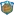 Fram Reykjavík Form: DLLD Form: WLLL |
-0.17 vs -2.14 | 1.41 | 17% | ✓ | ⚽⚽ 2.53 |
📉 Home team has a dip in form recently | 📉 Away team has a dip in form recently |
| Wed. 03 Jul. | Ayacucho FC  0:0  UCV Moquegua Form: DWDL Form: DLDL |
-0.17 vs -2.0 | 17% | ⁃ | 😴 0.95 |
📉 Home team has a dip in form recently | 📉 Away team has a dip in form recently | |
| Thu. 04 Jul. | Waterford FC  1:0  St. Patrick's Athletic Form: LWWW Form: DWDL |
-0.17 vs -0.89 | 2.94 | 17% | ✓ | ⚽ 1.93 |
📉 Away team has a dip in form recently | |
| Sun. 30 Jun. | UMF Njardvík 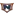 2:5 UMF Afturelding Form: WLLD Form: DWWD |
-1.23 vs -0.17 | 2.84 | 17% | ✓ | ⚽⚽⚽ 3.15 |
📉 Home team has a dip in form recently | |
| Sun. 30 Jun. | FC Hegelmann  3:1  FK Zalgiris Vilnius Form: LDWW Form: WWLL |
-0.2 vs -0.18 | 1.83 | 16% | ❌ | ⚽⚽ 2.34 |
📉 Away team has a dip in form recently | |
| Sat. 29 Jun. | Skanstes SK  3:0  JFK Ventspils Form: LWWW Form: LDLL |
-0.18 vs -1.67 | 16% | ✓ | 😴 0.95 |
📉 Away team has a dip in form recently | ||
| Sun. 30 Jun. | FK TransINVEST  2:1  DFK Dainava Alytus Form: WLWL Form: LWLD |
-0.19 vs -1.48 | 2.04 | 16% | ✓ | ⚽ 1.28 |
📉 Home team has a dip in form recently | 📉 Away team has a dip in form recently |
| Sat. 29 Jun. | Atlético Ottawa  4:3  Forge FC Form: LDWL Form: WLDW |
-0.19 vs -1.0 | 1.57 | 16% | ✓ | ⚽ 1.68 |
📉 Home team has a dip in form recently | 📉 Away team has a dip in form recently |
| Sun. 30 Jun. | Paysandu SC  1:1  Operário Ferroviário Esporte Clube (PR) Form: DWDD Form: WLDL |
-0.19 vs -1.18 | 2.16 | 16% | ⁃ | 😴 0.68 |
📉 Home team has a dip in form recently | 📉 Away team has a dip in form recently |
| Mon. 01 Jul. | Chungnam Asan  2:0  Seoul E-Land Form: WWWD Form: LLLW |
-0.2 vs -1.02 | 3.05 | 16% | ✓ | ⚽ 1.88 |
📉 Away team has a dip in form recently | |
| Thu. 04 Jul. | NSÍ Runavík II  23:00 AB Argir Form: WDLL Form: DWLL |
-0.21 vs -1.89 | 16% | ⚽⚽ 2.68 |
📉 Home team has a dip in form recently | 📉 Away team has a dip in form recently | ||
| Sat. 29 Jun. | Bumprom Gomel  0:0  Lokomotiv Gomel Form: WLDW Form: LWDL |
-0.21 vs -1.74 | 16% | ⁃ | ⚽ 1.63 |
📉 Home team has a dip in form recently | 📉 Away team has a dip in form recently | |
| Tue. 02 Jul. | Clube de Regatas Brasil (AL)  1:1  Brusque Futebol Clube (SC) Form: DLDW Form: DDDD |
-0.21 vs -1.46 | 16% | ⁃ | ⚽ 1.8 |
📉 Home team has a dip in form recently | 📉 Away team has a dip in form recently | |
| Fri. 28 Jun. | Altay Oskemen 0:0  FK Jetisay Form: WWDL Form: WWDL |
-0.3 vs -0.21 | 16% | ⁃ | ⚽ 1.08 |
📉 Home team has a dip in form recently | 📉 Away team has a dip in form recently | |
| Wed. 03 Jul. | Club Leones del Norte  2:3 Cuniburo FC Form: LWWW Form: WWWW |
-0.21 vs -0.32 | 2.46 | 16% | ❌ | ⚽ 1.94 |
||
| Sat. 29 Jun. | New York City FC 4:2  Orlando City SC Form: LWWL Form: WLWW |
-0.22 vs -0.67 | 1.92 | 16% | ✓ | ⚽ 1.28 |
📉 Home team has a dip in form recently | 📉 Away team has a dip in form recently |
| Sun. 30 Jun. | Tahiti  2:1  Fiji Form: DLLW Form: WWLL |
-0.22 vs -0.4 | 16% | ✓ | ⚽⚽ 2.37 |
📉 Home team has a dip in form recently | 📉 Away team has a dip in form recently | |
| Fri. 28 Jun. | FC Arys  1:4 FK Ulytau Form: LWWL Form: LWWD |
-0.75 vs -0.23 | 15% | ✓ | ⚽ 1.75 |
📉 Home team has a dip in form recently | ||
| Sun. 30 Jun. | Suwon Samsung Bluewings  1:1 Ansan Greeners Form: LWDD Form: LWDL |
-0.23 vs -2.24 | 1.44 | 15% | ⁃ | ⚽ 1.45 |
🏥 📉 Home team has considerable injuries and a dip in form recently | 📉 Away team has a dip in form recently |
| Sun. 30 Jun. | MerryLand Quy Nhon Binh Dinh FC 4:1  Cong An Ha Noi FC Form: WWDW Form: LWWL |
-0.23 vs -0.84 | 15% | ✓ | ⚽ 1.9 |
📉 Away team has a dip in form recently | ||
| Sun. 30 Jun. | Cerezo Osaka  2:1  Nagoya Grampus Form: WWDL Form: LLLL |
-0.24 vs -2.06 | 2.38 | 15% | ✓ | ⚽ 1.05 |
📉 Home team has a dip in form recently | 🏥 📉 Away team has considerable injuries and a dip in form recently |
| Thu. 04 Jul. | Red Bull Bragantino  3:1  Atlético Clube Goianiense Form: LDWL Form: DDLL |
-0.24 vs -1.66 | 15% | ✓ | ⚽⚽ 2.04 |
📉 Home team has a dip in form recently | 📉 Away team has a dip in form recently | |
| Sun. 30 Jun. | Pohang Steelers  2:1  Ulsan HD FC Form: DWDW Form: WLDL |
-0.24 vs -0.93 | 3.05 | 15% | ✓ | ⚽⚽ 2.22 |
🏥 📉 Away team has considerable injuries and a dip in form recently | |
| Sun. 30 Jun. | Yelimay Semey  1:1  Zhetysu Taldykorgan Form: WDDD Form: DLDL |
-0.25 vs -1.78 | 15% | ⁃ | ⚽ 1.85 |
📉 Home team has a dip in form recently | 📉 Away team has a dip in form recently | |
| Mon. 01 Jul. | Neftchi Fergana  0:2  Pakhtakor Tashkent Form: LDLL Form: LWWW |
-1.2 vs -0.25 | 15% | ✓ | ⚽ 1.22 |
📉 Home team has a dip in form recently | ||
| Sat. 29 Jun. | Utsiktens BK  2:3  IK Oddevold Form: LLLL Form: LDLL |
-0.25 vs -2.15 | 2.4 | 15% | ❌ | ⚽ 1.49 |
📉 Home team has a dip in form recently | 📉 Away team has a dip in form recently |
| Wed. 03 Jul. | Gualaceo SC  0:1  San Antonio FC Form: LWLL Form: DLLW |
-0.26 vs -1.96 | 1.65 | 15% | ❌ | 😴 0.77 |
📉 Home team has a dip in form recently | 📉 Away team has a dip in form recently |
| Fri. 28 Jun. | IK Brage  2:2  Gefle IF Form: WLWD Form: LLLD |
-0.26 vs -1.87 | 1.61 | 15% | ⁃ | ⚽ 1.65 |
📉 Home team has a dip in form recently | 📉 Away team has a dip in form recently |
| Sun. 30 Jun. | Trelleborgs FF  1:4  Östers IF Form: LWDL Form: LDWW |
-0.6 vs -0.26 | 1.91 | 15% | ✓ | ⚽ 1.66 |
📉 Home team has a dip in form recently | |
| Sun. 30 Jun. | The Cong - Viettel FC  0:2 Song Lam Nghe An FC Form: DWLL Form: LLDW |
-0.26 vs -1.79 | 1.35 | 15% | ❌ | ⚽ 1.36 |
📉 Home team has a dip in form recently | 📉 Away team has a dip in form recently |
| Sun. 30 Jun. | Orange County SC 0:2  Oakland Roots SC Form: WLLW Form: WLWW |
-0.27 vs -0.65 | 2.42 | 15% | ❌ | ⚽ 1.51 |
📉 Home team has a dip in form recently | 📉 Away team has a dip in form recently |
| Sun. 30 Jun. | ÍBV Vestmannaeyjar  5:0  Keflavík ÍF Form: WWDD Form: WLDL |
-0.27 vs -1.46 | 15% | ✓ | ⚽⚽ 2.73 |
📉 Home team has a dip in form recently | 📉 Away team has a dip in form recently | |
| Fri. 28 Jun. | Bay Olympic FC  2:0  Western Springs AFC Form: WLLL Form: LWLW |
-1.12 vs -0.27 | 15% | ❌ | ⚽⚽ 2.58 |
📉 Home team has a dip in form recently | 📉 Away team has a dip in form recently | |
| Fri. 28 Jun. | Dundalk FC 0:2 Waterford FC Form: LWLL Form: LWWW |
-0.77 vs -0.27 | 3.45 | 15% | ✓ | ⚽ 1.74 |
📉 Home team has a dip in form recently | |
| Sun. 30 Jun. | New York Red Bulls  2:2 D.C. United Form: DWDD Form: LDLL |
-0.28 vs -2.51 | 1.54 | 14% | ⁃ | ⚽⚽ 2.32 |
📉 Home team has a dip in form recently | 📉 Away team has a dip in form recently |
| Sat. 29 Jun. | Tianjin Jinmen Tiger  3:0  Shenzhen Peng City Form: WDWD Form: WWLD |
-0.29 vs -0.98 | 1.02 | 14% | ✓ | ⚽ 1.77 |
📉 Home team has a dip in form recently | 🏥 📉 Away team has considerable injuries and a dip in form recently |
| Sun. 30 Jun. | Club de Gimnasia y Tiro  0:3  CA San Telmo Form: WWWD Form: WDLD |
-0.3 vs -0.76 | 2.54 | 14% | ❌ | 😴 0.35 |
📉 Away team has a dip in form recently | |
| Sun. 30 Jun. | Sporting Kansas City  2:0  Austin FC Form: WLWW Form: DWLW |
-0.3 vs -1.29 | 1.23 | 14% | ✓ | ⚽⚽ 2.28 |
📉 Home team has a dip in form recently | 📉 Away team has a dip in form recently |
| Wed. 03 Jul. | Guayaquil City FC 5:0  Chacaritas FC Form: WWLL Form: LLWL |
-0.3 vs -1.79 | 1.63 | 14% | ✓ | 😴 0.66 |
📉 Home team has a dip in form recently | 📉 Away team has a dip in form recently |
| Sun. 30 Jun. | CA Mitre  2:0  AMSD Atlético de Rafaela Form: DDWL Form: LLLD |
-0.31 vs -2.21 | 1.87 | 14% | ✓ | 😴 0.51 |
📉 Home team has a dip in form recently | 📉 Away team has a dip in form recently |
| Thu. 04 Jul. | Fjölnir Reykjavík 0:0 Keflavík ÍF Form: WLDW Form: WLDL |
-0.31 vs -1.51 | 14% | ⁃ | ⚽⚽ 2.84 |
📉 Home team has a dip in form recently | 📉 Away team has a dip in form recently | |
| Sat. 29 Jun. | Qyzyljar Petropavlovsk  2:0  Shakhter Karaganda Form: DLWD Form: LLLW |
-0.31 vs -2.13 | 1.62 | 14% | ✓ | 😴 0.81 |
📉 Home team has a dip in form recently | 📉 Away team has a dip in form recently |
| Thu. 04 Jul. | Metallurg Bekabad  7:8 after pens  Surkhon Termiz Form: LDLL Form: DWLW |
-1.42 vs -0.31 | 14% | ✓ | ⚽⚽ 2.16 |
📉 Home team has a dip in form recently | 📉 Away team has a dip in form recently | |
| Sun. 30 Jun. | IFK Mariehamn  1:2  HJK Helsinki Form: LWLL Form: LWLL |
-1.57 vs -0.32 | 1.76 | 14% | ✓ | ⚽ 1.76 |
📉 Home team has a dip in form recently | 📉 Away team has a dip in form recently |
| Sun. 30 Jun. | Avaí FC  1:1 Amazonas FC Form: DDDL Form: DWDL |
-0.32 vs -1.59 | 1.79 | 14% | ⁃ | ⚽ 1.07 |
📉 Home team has a dip in form recently | 📉 Away team has a dip in form recently |
| Wed. 03 Jul. | B36 Tórshavn II  1:3 B71 Sandoy Form: WWLL Form: LWWW |
-0.32 vs -0.61 | 14% | ❌ | ⚽⚽ 2.65 |
📉 Home team has a dip in form recently | ||
| Sun. 30 Jun. | Changchun Yatai  5:0  Qingdao Hainiu Form: WDWD Form: WLLW |
-0.33 vs -1.2 | 2.1 | 13% | ✓ | ⚽ 1.75 |
📉 Home team has a dip in form recently | 📉 Away team has a dip in form recently |
| Thu. 04 Jul. | Clube Atlético Mineiro  2:4 CR Flamengo Form: LDLW Form: LWWD |
-1.24 vs -0.33 | 1.11 | 13% | ✓ | ⚽ 1.36 |
🏥🏥 📉 Home team has MAJOR injuries and a dip in form recently | 🏥🏥 Away team has MAJOR injuries |
| Sat. 29 Jun. | Coritiba Foot Ball Club  1:1  Vila Nova Futebol Clube (GO) Form: WLDD Form: WWDW |
-0.35 vs -1.35 | 13% | ⁃ | ⚽ 1.97 |
🏥 📉 Home team has considerable injuries and a dip in form recently | ||
| Thu. 04 Jul. | Víkingur Gøta 2:0 HB Tórshavn Form: LLWD Form: LLLW |
-0.35 vs -0.69 | 1.86 | 13% | ✓ | ⚽⚽ 2.21 |
📉 Home team has a dip in form recently | 📉 Away team has a dip in form recently |
| Wed. 03 Jul. | Mash'al Mubarek 1:3 AET FC Qizilqum Form: WDWL Form: DDWW |
-0.35 vs -1.01 | 13% | ❌ | ⚽ 1.54 |
📉 Home team has a dip in form recently | ||
| Fri. 28 Jun. | FC Qizilqum 1:0  FC OKMK Olmaliq Form: DDWW Form: WWWL |
-0.76 vs -0.35 | 13% | ❌ | ⚽⚽ 2.68 |
📉 Away team has a dip in form recently | ||
| Thu. 04 Jul. | New England Revolution 2:1  Atlanta United FC Form: WLWL Form: WLLL |
-0.35 vs -1.65 | 13% | ✓ | ⚽⚽ 2.85 |
🏥 📉 Home team has considerable injuries and a dip in form recently | 📉 Away team has a dip in form recently | |
| Sat. 29 Jun. | Guangzhou FC  1:1  Nanjing City Form: LDDW Form: WWDD |
-0.36 vs -1.11 | 13% | ⁃ | ⚽ 1.52 |
📉 Home team has a dip in form recently | 📉 Away team has a dip in form recently | |
| Sun. 30 Jun. | Loudoun United FC 2:0  Tampa Bay Rowdies Form: DDWW Form: WWLD |
-0.36 vs -0.51 | 3.55 | 13% | ✓ | ⚽⚽ 2.16 |
📉 Away team has a dip in form recently | |
| Thu. 04 Jul. | Toronto FC  1:2 Orlando City SC Form: LLLL Form: WLWW |
-1.78 vs -0.36 | 3.05 | 13% | ✓ | ⚽⚽ 2.15 |
🏥 📉 Home team has considerable injuries and a dip in form recently | 📉 Away team has a dip in form recently |
| Sat. 29 Jun. | Vegalta Sendai  3:2  Tochigi SC Form: DDWL Form: WWLL |
-0.37 vs -1.8 | 1.76 | 13% | ✓ | ⚽ 1.5 |
📉 Home team has a dip in form recently | 📉 Away team has a dip in form recently |
| Sun. 30 Jun. | Gwangju FC 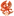 2:1  Jeju United Form: LWLW Form: WLWL |
-0.37 vs -1.68 | 1.92 | 13% | ✓ | ⚽ 1.8 |
📉 Home team has a dip in form recently | 🏥 📉 Away team has considerable injuries and a dip in form recently |
| Fri. 28 Jun. | AC Oulu 1:0 Kuopion Palloseura Form: WWLL Form: WLWW |
-0.56 vs -0.37 | 1.85 | 13% | ❌ | ⚽⚽ 2.91 |
📉 Home team has a dip in form recently | 📉 Away team has a dip in form recently |
| Fri. 28 Jun. | HK Kópavogs  1:2  KA Akureyri Form: LWWW Form: LWWW |
-0.67 vs -0.38 | 1.84 | 12% | ✓ | ⚽⚽ 2.35 |
||
| Wed. 03 Jul. | Yokohama F. Marinos  0:1  Sagan Tosu Form: LLLW Form: LWWW |
-0.38 vs -1.41 | 1.72 | 12% | ❌ | ⚽⚽⚽ 3.08 |
📉 Home team has a dip in form recently | |
| Sun. 30 Jun. | Arsenal Dzerzhinsk  0:3  Naftan Novopolotsk Form: WWLL Form: DLWL |
-0.39 vs -1.58 | 12% | ❌ | ⚽⚽⚽ 3.29 |
📉 Home team has a dip in form recently | 📉 Away team has a dip in form recently | |
| Tue. 02 Jul. | ADA Jaén 4:1 FC Carlos Stein Form: WDLW Form: LLWW |
-0.39 vs -1.24 | 12% | ✓ | ⚽⚽⚽⚽ 4.66 |
📉 Home team has a dip in form recently | 📉 Away team has a dip in form recently | |
| Wed. 03 Jul. | Grêmio Novorizontino  1:1  Mirassol Futebol Clube (SP) Form: DWDW Form: LDDW |
-0.39 vs -1.3 | 2.66 | 12% | ⁃ | ⚽ 1.17 |
📉 Away team has a dip in form recently | |
| Thu. 04 Jul. | Bray Wanderers 0:1  Longford Town FC Form: LWLL Form: LLDW |
-0.39 vs -1.6 | 1.76 | 12% | ❌ | ⚽ 1.58 |
📉 Home team has a dip in form recently | 📉 Away team has a dip in form recently |
| Mon. 01 Jul. | Mexico 0:0 Ecuador Form: LWLD Form: LWDL |
-0.79 vs -0.4 | 3.7 | 12% | ⁃ | ⚽ 1.14 |
📉 Home team has a dip in form recently | 📉 Away team has a dip in form recently |
| Wed. 03 Jul. | Cuiabá Esporte Clube (MT)  1:2  Botafogo de Futebol e Regatas Form: DDLD Form: WDWW |
-1.18 vs -0.4 | 12% | ✓ | ⚽⚽ 2.13 |
📉 Home team has a dip in form recently | 🏥 Away team has considerable injuries | |
| Sat. 29 Jun. | FC Hoyvík  1:1 TB Tvøroyri Form: LLWD Form: DWDW |
-1.57 vs -0.41 | 1.23 | 12% | ⁃ | ⚽ 1.42 |
📉 Home team has a dip in form recently | |
| Thu. 04 Jul. | FC Olympic 0:1  FK Andijon Form: DWWL Form: DDWW |
-0.42 vs -0.95 | 12% | ❌ | ⚽ 1.7 |
📉 Home team has a dip in form recently | ||
| Sat. 29 Jun. | Clube de Regatas Vasco da Gama 1:1 Botafogo de Futebol e Regatas Form: DWWW Form: WDWW |
-0.43 vs -0.55 | 11% | ⁃ | ⚽⚽ 2.46 |
🏥 Away team has considerable injuries | ||
| Fri. 28 Jun. | Helsingborgs IF  1:0 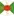 Varbergs BoIS Form: WWLW Form: DWWL |
-0.43 vs -1.14 | 2.02 | 11% | ✓ | ⚽ 1.81 |
📉 Home team has a dip in form recently | 📉 Away team has a dip in form recently |
| Fri. 28 Jun. | Hamilton Wanderers  1:1  Auckland United FC Form: LLWD Form: DWWD |
-1.4 vs -0.43 | 11% | ⁃ | ⚽⚽ 2.46 |
📉 Home team has a dip in form recently | ||
| Sun. 30 Jun. | Houston Dynamo FC 1:0 Charlotte FC Form: DWWL Form: DWLL |
-0.44 vs -1.09 | 1.25 | 11% | ✓ | ⚽⚽ 2.07 |
📉 Home team has a dip in form recently | 📉 Away team has a dip in form recently |
| Fri. 28 Jun. | Järvenpään Palloseura  2:2  Käpylän Pallo Form: LWDD Form: LLDD |
-0.44 vs -2.03 | 11% | ⁃ | ⚽⚽⚽ 3.11 |
📉 Home team has a dip in form recently | 📉 Away team has a dip in form recently | |
| Sun. 30 Jun. | Sagan Tosu 1:4  Kashiwa Reysol Form: LWWW Form: DWWW |
-0.44 vs -0.47 | 3.45 | 11% | ❌ | ⚽⚽ 2.29 |
||
| Thu. 04 Jul. | FK Panevezys  0:1 FC Hegelmann Form: LWLW Form: LDWW |
-0.58 vs -0.45 | 2.3 | 11% | ✓ | ⚽ 1.37 |
🏥 📉 Home team has considerable injuries and a dip in form recently | |
| Thu. 04 Jul. | Sacramento Republic FC  0:1 Las Vegas Lights FC Form: DWLL Form: DDWW |
-0.45 vs -1.27 | 1.79 | 11% | ❌ | ⚽ 1.46 |
📉 Home team has a dip in form recently | |
| Sun. 30 Jun. | CA Chacarita Juniors  1:1  Club Ferro Carril Oeste Form: WWDL Form: LDDW |
-0.45 vs -1.05 | 2.38 | 11% | ⁃ | ⚽⚽ 2.12 |
📉 Home team has a dip in form recently | 📉 Away team has a dip in form recently |
| Sun. 30 Jun. | Ceará Sporting Club  4:2  Ituano Futebol Clube (SP) Form: DLWL Form: DDLW |
-0.45 vs -2.23 | 11% | ✓ | ⚽ 1.62 |
📉 Home team has a dip in form recently | 📉 Away team has a dip in form recently | |
| Sun. 30 Jun. | Sacramento Republic FC 1:0 Hartford Athletic Form: DWLL Form: WLLL |
-0.46 vs -2.18 | 1.54 | 11% | ✓ | ⚽ 1.69 |
📉 Home team has a dip in form recently | 📉 Away team has a dip in form recently |
| Thu. 04 Jul. | Club Athletico Paranaense  1:2 São Paulo Futebol Clube Form: WLWL Form: WWWW |
-0.84 vs -0.46 | 11% | ✓ | ⚽ 1.93 |
🏥 📉 Home team has considerable injuries and a dip in form recently | 🏥 Away team has considerable injuries | |
| Tue. 02 Jul. | FK Auda  0:1  Grobinas SC/LFS Form: LLLW Form: LWWW |
-0.89 vs -0.47 | 11% | ✓ | ⚽⚽ 2.04 |
📉 Home team has a dip in form recently | ||
| Sat. 29 Jun. | CA Estudiantes  1:1  CA San Miguel Form: LDDL Form: WDDW |
-0.47 vs -0.74 | 2.1 | 11% | ⁃ | 😴 0.61 |
📉 Home team has a dip in form recently | 📉 Away team has a dip in form recently |
| Mon. 01 Jul. | Gyeongnam FC  2:4  Jeonnam Dragons Form: LDLW Form: DDWW |
-0.84 vs -0.47 | 2.64 | 11% | ✓ | ⚽ 1.98 |
📉 Home team has a dip in form recently | |
| Fri. 28 Jun. | Club Juan Pablo II  0:1  Deportivo Llacuabamba Form: WWLW Form: WDWL |
-0.47 vs -0.53 | 1.04 | 11% | ❌ | ⚽ 1.96 |
📉 Home team has a dip in form recently | 📉 Away team has a dip in form recently |
| Sun. 30 Jun. | FC Tokyo  0:1  Avispa Fukuoka Form: WLLL Form: WWLL |
-0.47 vs -0.96 | 2.54 | 11% | ❌ | ⚽⚽ 2.03 |
📉 Home team has a dip in form recently | 🏥 📉 Away team has considerable injuries and a dip in form recently |
| Sun. 30 Jun. | Canada 0:0 Chile Form: WDWL Form: WDLD |
-0.48 vs -0.93 | 3.1 | 10% | ⁃ | 😴 0.72 |
📉 Home team has a dip in form recently | 🏥 📉 Away team has considerable injuries and a dip in form recently |
| Sun. 30 Jun. | Miami FC  0:4  Detroit City FC Form: LDLL Form: WLWD |
-1.44 vs -0.48 | 1.88 | 10% | ✓ | ⚽⚽ 2.25 |
📉 Home team has a dip in form recently | 📉 Away team has a dip in form recently |
| Sun. 30 Jun. | LPBank Hoang Anh Gia Lai FC  2:1  Hai Phong FC Form: LWLW Form: WLLL |
-0.48 vs -1.37 | 1.77 | 10% | ✓ | ⚽ 1.6 |
📉 Home team has a dip in form recently | 📉 Away team has a dip in form recently |
| Sat. 29 Jun. | B36 Tórshavn 3:0 Skála IF Form: LWWL Form: LLLD |
-0.48 vs -1.47 | 1.37 | 10% | ✓ | ⚽⚽ 2.71 |
📉 Home team has a dip in form recently | 📉 Away team has a dip in form recently |
| Sat. 29 Jun. | Yokohama F. Marinos 1:2  Tokyo Verdy Form: LLLW Form: LWDL |
-0.48 vs -1.24 | 1.98 | 10% | ❌ | ⚽⚽ 2.79 |
📉 Home team has a dip in form recently | 📉 Away team has a dip in form recently |
| Sat. 29 Jun. | Oita Trinita 0:0  Ventforet Kofu Form: LDWW Form: LDLW |
-0.48 vs -1.46 | 10% | ⁃ | ⚽ 1.7 |
📉 Away team has a dip in form recently | ||
| Thu. 04 Jul. | Treaty United 0:1 Cobh Ramblers FC Form: WWLL Form: WLDW |
-0.49 vs -1.32 | 2.44 | 10% | ❌ | ⚽ 1.73 |
📉 Home team has a dip in form recently | 📉 Away team has a dip in form recently |
| Sun. 30 Jun. | Meizhou Hakka  0:3  Henan FC Form: LLLL Form: WWWL |
-1.7 vs -0.49 | 2.22 | 10% | ✓ | ⚽⚽ 2.02 |
📉 Home team has a dip in form recently | 📉 Away team has a dip in form recently |
| Sat. 29 Jun. | Wuxi Wugo  2:2  Jiangxi Lushan Form: LWDW Form: DLLD |
-0.49 vs -2.28 | 4.0 | 10% | ⁃ | ⚽⚽ 2.14 |
📉 Away team has a dip in form recently | |
| Fri. 28 Jun. | FH Hafnarfjördur  1:0  Breidablik Kópavogur Form: DWLW Form: LLDW |
-0.5 vs -0.88 | 3.1 | 10% | ✓ | ⚽⚽ 2.66 |
📉 Home team has a dip in form recently | 📉 Away team has a dip in form recently |
| Sun. 30 Jun. | Örgryte IS  2:0  Skövde AIK Form: WDLW Form: DLLL |
-0.51 vs -1.95 | 1.77 | 10% | ✓ | ⚽ 1.96 |
📉 Home team has a dip in form recently | 📉 Away team has a dip in form recently |
| Sun. 30 Jun. | Bucheon FC 1995  1:2  FC Anyang Form: LWLD Form: WDWW |
-0.88 vs -0.51 | 2.5 | 10% | ✓ | ⚽ 1.26 |
📉 Home team has a dip in form recently | |
| Sun. 30 Jun. | Thróttur Reykjavík  1:0  UMF Grindavík Form: DWLL Form: WDDD |
-1.18 vs -0.51 | 2.22 | 10% | ❌ | ⚽⚽ 2.52 |
📉 Home team has a dip in form recently | 📉 Away team has a dip in form recently |
| Sat. 29 Jun. | CA Agropecuario  2:4  CA Racing (Córdoba) Form: LLLW Form: DLWW |
-0.52 vs -0.98 | 2.04 | 10% | ❌ | ⚽ 1.44 |
📉 Home team has a dip in form recently | 📉 Away team has a dip in form recently |
| Thu. 04 Jul. | Criciúma Esporte Clube 1:0 Cruzeiro Esporte Clube Form: WDWW Form: WLLL |
-0.52 vs -1.37 | 10% | ✓ | ⚽ 1.55 |
📉 Away team has a dip in form recently | ||
| Sat. 29 Jun. | FK Panevezys 0:1  FK Banga Gargzdai Form: LWLW Form: DLWD |
-0.52 vs -1.14 | 1.73 | 10% | ❌ | 😴 0.87 |
🏥 📉 Home team has considerable injuries and a dip in form recently | 📉 Away team has a dip in form recently |
| Sun. 30 Jun. | CSD Tristan Suarez  2:2  Club Almirante Brown Form: WWDL Form: LLDD |
-0.52 vs -1.67 | 1.91 | 10% | ⁃ | ⚽ 1.11 |
📉 Home team has a dip in form recently | 📉 Away team has a dip in form recently |
| Sat. 29 Jun. | CD Cobreloa  0:0  San Marcos de Arica Form: WWDL Form: WWLD |
-0.53 vs -0.75 | 1.04 | 9% | ⁃ | ⚽⚽ 2.24 |
📉 Home team has a dip in form recently | 📉 Away team has a dip in form recently |
| Sun. 30 Jun. | Criciúma Esporte Clube 1:1  Sport Club Internacional Form: WDWW Form: DDWW |
-0.53 vs -0.89 | 9% | ⁃ | ⚽⚽ 2.17 |
🏥🏥 Away team has MAJOR injuries | ||
| Wed. 03 Jul. | Akzhayik Uralsk  2:3  Kairat-Zhas Form: LLLL Form: WWWL |
-1.45 vs -0.53 | 9% | ✓ | ⚽⚽ 2.82 |
📉 Home team has a dip in form recently | 📉 Away team has a dip in form recently | |
| Sat. 29 Jun. | FC Suduroy  3:2 B36 Tórshavn II Form: DDLW Form: WWLL |
-0.53 vs -0.94 | 9% | ✓ | ⚽⚽⚽ 3.1 |
📉 Home team has a dip in form recently | 📉 Away team has a dip in form recently | |
| Sat. 29 Jun. | Memphis 901 FC  5:1 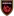 Phoenix Rising FC Form: DWWL Form: DDLL |
-0.54 vs -1.05 | 1.89 | 9% | ✓ | ⚽⚽ 2.01 |
📉 Home team has a dip in form recently | 📉 Away team has a dip in form recently |
| Sun. 30 Jun. | Rezeknes FA 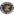 1:1 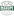 Mārupes SC Form: LLDL Form: WWDW |
-1.41 vs -0.54 | 9% | ⁃ | ⚽ 1.62 |
📉 Home team has a dip in form recently | ||
| Sun. 30 Jun. | FC Dziugas Telsiai  1:0  FK Suduva Marijampole Form: WLLD Form: LLLD |
-0.54 vs -1.7 | 2.36 | 9% | ✓ | ⚽ 1.51 |
📉 Home team has a dip in form recently | 📉 Away team has a dip in form recently |
| Sat. 29 Jun. | Jeonbuk Hyundai Motors  1:5 FC Seoul Form: DLDW Form: WWLW |
-0.94 vs -0.54 | 2.74 | 9% | ✓ | ⚽⚽ 2.23 |
📉 Home team has a dip in form recently | 📉 Away team has a dip in form recently |
| Thu. 04 Jul. | Thór Akureyri  3:1 ÍF Grótta Form: DLDD Form: DWDW |
-0.55 vs -1.36 | 9% | ✓ | ⚽ 1.8 |
📉 Home team has a dip in form recently | ||
| Sun. 30 Jun. | Foshan Nanshi  2:0  Yanbian Longding Form: DWLW Form: LDLL |
-0.55 vs -2.14 | 3.3 | 9% | ✓ | ⚽ 1.74 |
📉 Home team has a dip in form recently | 📉 Away team has a dip in form recently |
| Sat. 29 Jun. | FK Slonim 2017  2:2  FK Lida Form: WLDL Form: WLDL |
-1.02 vs -0.56 | 9% | ⁃ | ⚽ 1.83 |
📉 Home team has a dip in form recently | 📉 Away team has a dip in form recently | |
| Tue. 02 Jul. | Goiás EC  2:1  América Futebol Clube (MG) Form: LLWL Form: LDLW |
-0.56 vs -1.09 | 9% | ✓ | ⚽⚽ 2.03 |
📉 Home team has a dip in form recently | 📉 Away team has a dip in form recently | |
| Fri. 28 Jun. | Jalgpallikool Tammeka  1:1 Kalju FC Form: LLDW Form: DWDW |
-0.92 vs -0.57 | 9% | ⁃ | ⚽⚽ 2.51 |
📉 Home team has a dip in form recently | ||
| Mon. 01 Jul. | FA Siauliai  1:0  FK Kauno Zalgiris Form: DWWL Form: WWLW |
-0.58 vs -0.58 | 3.15 | 8% | ✓ | ⚽ 1.97 |
🏥 📉 Home team has considerable injuries and a dip in form recently | 📉 Away team has a dip in form recently |
| Thu. 04 Jul. | The Cong - Viettel FC 1:4 Ha Noi FC Form: DWLL Form: WDWL |
-0.8 vs -0.58 | 2.2 | 8% | ✓ | ⚽⚽ 2.71 |
📉 Home team has a dip in form recently | 📉 Away team has a dip in form recently |
| Sun. 30 Jun. | Club Social y Atlético Guillermo Brown  0:0  CA Alvarado Form: DWDD Form: WDDL |
-0.58 vs -1.44 | 2.3 | 8% | ⁃ | 😴 0.94 |
📉 Home team has a dip in form recently | 📉 Away team has a dip in form recently |
| Sun. 30 Jun. | Birmingham Legion FC  1:4  Louisville City FC Form: WWLL Form: WLWL |
-0.58 vs -0.84 | 2.54 | 8% | ❌ | ⚽⚽ 2.61 |
📉 Home team has a dip in form recently | 📉 Away team has a dip in form recently |
| Sun. 30 Jun. | FK Slutsk  1:0  FK Minsk Form: LLWW Form: DLLL |
-0.58 vs -2.15 | 8% | ✓ | 😴 0.98 |
📉 Home team has a dip in form recently | 📉 Away team has a dip in form recently | |
| Sun. 30 Jun. | Dalvík/Reynir  0:1  Leiknir Reykjavík Form: WLDD Form: LWLW |
-0.59 vs -0.96 | 2.72 | 8% | ❌ | ⚽⚽ 2.54 |
📉 Home team has a dip in form recently | 📉 Away team has a dip in form recently |
| Sat. 29 Jun. | Atlético Vega Real  Unknown  Delfines del Este FC Form: DDWD Form: LWDW |
-0.59 vs -1.02 | 1.01 | 8% | 😴 0.87 |
📉 Home team has a dip in form recently | ||
| Fri. 28 Jun. | Slavia Mozyr  0:0  FK Gomel Form: DWDL Form: LLDW |
-0.6 vs -1.23 | 8% | ⁃ | ⚽ 1.46 |
📉 Home team has a dip in form recently | 📉 Away team has a dip in form recently | |
| Thu. 04 Jul. | Finn Harps  1:0  Kerry Football Club Form: LDDW Form: WLDL |
-0.6 vs -1.93 | 1.75 | 8% | ✓ | ⚽ 1.1 |
📉 Home team has a dip in form recently | 📉 Away team has a dip in form recently |
| Sun. 30 Jun. | Audax Italiano  0:2 Deportes Santa Cruz Form: LWDL Form: WDWD |
-0.6 vs -1.15 | 1.6 | 8% | ❌ | ⚽ 1.38 |
📉 Home team has a dip in form recently | 📉 Away team has a dip in form recently |
| Sat. 29 Jun. | FC Lahti 2:2  Ilves Tampere Form: DLDL Form: LDDW |
-0.92 vs -0.61 | 1.46 | 8% | ⁃ | ⚽⚽ 2.49 |
📉 Home team has a dip in form recently | 📉 Away team has a dip in form recently |
| Tue. 02 Jul. | KA Akureyri 3:2  Valur Reykjavík Form: LWWW Form: LDWW |
-0.61 vs -0.93 | 8% | ✓ | ⚽⚽⚽ 3.94 |
|||
| Sun. 30 Jun. | Clube Atlético Mineiro 1:1 Atlético Clube Goianiense Form: LDLW Form: DDLL |
-0.62 vs -1.81 | 8% | ⁃ | ⚽ 1.98 |
🏥🏥 📉 Home team has MAJOR injuries and a dip in form recently | 📉 Away team has a dip in form recently | |
| Sun. 30 Jun. | IF Gnistan  1:2 Ekenäs IF Form: LDLL Form: WWLW |
-1.25 vs -0.62 | 8% | ✓ | ⚽⚽ 2.84 |
📉 Home team has a dip in form recently | 📉 Away team has a dip in form recently | |
| Fri. 28 Jun. | Pacific FC  1:2  Vancouver FC Form: LLWL Form: DLWD |
-0.63 vs -1.24 | 2.02 | 7% | ❌ | ⚽ 1.52 |
📉 Home team has a dip in form recently | 📉 Away team has a dip in form recently |
| Sat. 29 Jun. | FC Astana  1:3  Kairat Almaty Form: LWLW Form: WLWD |
-0.7 vs -0.63 | 4.1 | 7% | ✓ | ⚽ 1.61 |
📉 Home team has a dip in form recently | 📉 Away team has a dip in form recently |
| Sat. 29 Jun. | Manurewa AFC 1:2 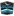 West Coast Rangers Form: LWLL Form: WLLL |
-0.63 vs -1.87 | 7% | ❌ | ⚽⚽⚽ 3.23 |
📉 Home team has a dip in form recently | 📉 Away team has a dip in form recently | |
| Sat. 29 Jun. | Academia Deportiva Cantolao  1:2 Ayacucho FC Form: DLLW Form: DWDL |
-0.63 vs -0.99 | 7% | ❌ | ⚽ 1.17 |
📉 Home team has a dip in form recently | 📉 Away team has a dip in form recently | |
| Sat. 29 Jun. | Mito HollyHock  1:1  Renofa Yamaguchi Form: LDLL Form: WLDW |
-0.84 vs -0.64 | 2.44 | 7% | ⁃ | ⚽ 1.39 |
📉 Home team has a dip in form recently | 📉 Away team has a dip in form recently |
| Fri. 28 Jun. | Odds BK  1:1  Kristiansund BK Form: WDDL Form: LWDW |
-0.65 vs -1.11 | 2.14 | 7% | ⁃ | ⚽⚽⚽ 3.05 |
📉 Home team has a dip in form recently | |
| Wed. 03 Jul. | Estudiantes de Mérida  3:2  Inter de Barinas Form: LWLW Form: WDWL |
-0.73 vs -0.65 | 1.01 | 7% | ❌ | ⚽ 1.15 |
📉 Home team has a dip in form recently | 📉 Away team has a dip in form recently |
| Fri. 28 Jun. | Dynamo Brest 1:1  FK Vitebsk Form: WLDL Form: LWDL |
-0.65 vs -1.25 | 7% | ⁃ | ⚽ 1.73 |
📉 Home team has a dip in form recently | 📉 Away team has a dip in form recently | |
| Thu. 04 Jul. | Minnesota United FC 1:3 Vancouver Whitecaps FC Form: LLLL Form: WWDW |
-1.23 vs -0.66 | 1.69 | 7% | ✓ | ⚽⚽⚽ 3.19 |
📉 Home team has a dip in form recently | |
| Sun. 30 Jun. | Grêmio Foot-Ball Porto Alegrense 1:0 Fluminense Football Club Form: WDWL Form: LLDL |
-0.66 vs -2.37 | 7% | ✓ | ⚽⚽ 2.08 |
🏥 📉 Home team has considerable injuries and a dip in form recently | 🏥🏥 📉 Away team has MAJOR injuries and a dip in form recently | |
| Thu. 04 Jul. | Universidad San Martín de Porres  1:1 Comerciantes FC Form: DWDD Form: DWDW |
-0.66 vs -0.99 | 1.47 | 7% | ⁃ | ⚽ 1.67 |
🏥 📉 Home team has considerable injuries and a dip in form recently | |
| Mon. 01 Jul. | HFX Wanderers FC  1:0  Cavalry FC Form: DWWL Form: DDLW |
-0.67 vs -0.9 | 3.0 | 7% | ✓ | ⚽ 1.33 |
📉 Home team has a dip in form recently | 📉 Away team has a dip in form recently |
| Sat. 29 Jun. | FC Nomme United  1:1 FC Flora Tallinn Form: DLDL Form: WDLL |
-1.35 vs -0.67 | 7% | ⁃ | ⚽⚽ 2.98 |
📉 Home team has a dip in form recently | 📉 Away team has a dip in form recently | |
| Mon. 01 Jul. | CA Talleres (Remedios de Escalada)  1:0  Quilmes AC Form: WDWD Form: LLLW |
-0.67 vs -1.37 | 2.9 | 7% | ✓ | 😴 0.68 |
📉 Home team has a dip in form recently | 📉 Away team has a dip in form recently |
| Sun. 30 Jun. | FK Aktobe  3:4  Tobol Kostanay Form: WLLL Form: DWWL |
-0.67 vs -1.23 | 1.56 | 7% | ❌ | ⚽ 1.84 |
📉 Home team has a dip in form recently | 📉 Away team has a dip in form recently |
| Fri. 28 Jun. | Vakhsh Bokhtar  1:0  Regar-TadAZ Tursunzoda Form: LWLW Form: WLLL |
-0.67 vs -0.9 | 7% | ✓ | 😴 0.25 |
📉 Home team has a dip in form recently | 📉 Away team has a dip in form recently | |
| Sun. 30 Jun. | Qingdao Red Lions  0:1 Heilongjiang Ice City Form: WLLL Form: LLWL |
-0.68 vs -1.67 | 1.1 | 6% | ❌ | ⚽ 1.9 |
📉 Home team has a dip in form recently | 📉 Away team has a dip in form recently |
| Sat. 29 Jun. | Wuhan Three Towns 1:2  Nantong Zhiyun Form: WLLL Form: WDWL |
-0.68 vs -1.59 | 3.65 | 6% | ❌ | ⚽ 1.84 |
📉 Home team has a dip in form recently | 📉 Away team has a dip in form recently |
| Mon. 01 Jul. | Jamaica 0:3 Venezuela Form: LLLW Form: WLLW |
-1.28 vs -0.69 | 2.08 | 6% | ✓ | ⚽ 1.05 |
🏥🏥 📉 Home team has MAJOR injuries and a dip in form recently | 🏥 📉 Away team has considerable injuries and a dip in form recently |
| Thu. 04 Jul. | UMF Njardvík 0:1 UMF Grindavík Form: WLLD Form: WDDD |
-1.14 vs -0.69 | 3.25 | 6% | ✓ | ⚽⚽ 2.3 |
📉 Home team has a dip in form recently | 📉 Away team has a dip in form recently |
| Sun. 30 Jun. | Shonan Bellmare  0:1  Kyoto Sanga Form: DLWW Form: DWWW |
-0.85 vs -0.69 | 3.85 | 6% | ✓ | ⚽ 1.66 |
🏥 📉 Home team has considerable injuries and a dip in form recently | |
| Sat. 29 Jun. | Kawasaki Frontale  1:1  Sanfrecce Hiroshima Form: DDDL Form: DDLW |
-1.05 vs -0.69 | 2.14 | 6% | ⁃ | ⚽⚽ 2.74 |
🏥 📉 Home team has considerable injuries and a dip in form recently | 📉 Away team has a dip in form recently |
| Fri. 28 Jun. | ABFF U17  0:2  Dinamo 2 Minsk Form: WLLW Form: LWWL |
-0.9 vs -0.69 | 6% | ✓ | ⚽ 1.22 |
📉 Home team has a dip in form recently | 📉 Away team has a dip in form recently | |
| Fri. 28 Jun. | Sligo Rovers 2:0 Shamrock Rovers Form: LLWW Form: LWLD |
-0.87 vs -0.69 | 1.41 | 6% | ❌ | ⚽ 1.51 |
📉 Home team has a dip in form recently | 📉 Away team has a dip in form recently |
| Sat. 29 Jun. | Daejeon Hana Citizen  0:2  Suwon FC Form: LLDL Form: WWDW |
-0.89 vs -0.7 | 1.32 | 6% | ✓ | ⚽⚽ 2.07 |
📉 Home team has a dip in form recently | |
| Sun. 30 Jun. | Atlanta United FC 2:1 Toronto FC Form: WLLL Form: LLLL |
-0.71 vs -2.42 | 1.81 | 6% | ✓ | ⚽⚽ 2.53 |
📉 Home team has a dip in form recently | 🏥 📉 Away team has considerable injuries and a dip in form recently |
| Sun. 30 Jun. | FK Kokand 1912 0:1 Olimpik-Mobiuz Tashkent Form: DDLL Form: LLWL |
-0.72 vs -1.65 | 6% | ❌ | ⚽⚽ 2.05 |
📉 Home team has a dip in form recently | 📉 Away team has a dip in form recently | |
| Tue. 02 Jul. | Olimpik-Mobiuz Tashkent 1:2  Xorazm Urganch Form: LLWL Form: WDDW |
-0.98 vs -0.72 | 6% | ✓ | ⚽ 1.51 |
📉 Home team has a dip in form recently | 📉 Away team has a dip in form recently | |
| Sun. 30 Jun. | San Antonio FC  2:3 New Mexico United Form: LLLW Form: LWWL |
-0.72 vs -0.83 | 6% | ❌ | ⚽ 1.71 |
📉 Home team has a dip in form recently | 📉 Away team has a dip in form recently | |
| Thu. 04 Jul. | Jalgpallikool Tammeka 2:1 FC Nomme United Form: LLDW Form: DLDL |
-0.73 vs -1.37 | 5% | ✓ | ⚽⚽⚽ 3.2 |
📉 Home team has a dip in form recently | 📉 Away team has a dip in form recently | |
| Thu. 04 Jul. | Santos FC Nazca 1:1  Deportivo Municipal Form: WDLD Form: DDDD |
-0.73 vs -1.43 | 5% | ⁃ | ⚽ 1.08 |
📉 Home team has a dip in form recently | 📉 Away team has a dip in form recently | |
| Sat. 29 Jun. | Roasso Kumamoto  4:0  Ehime FC Form: LLWL Form: WLLW |
-1.04 vs -0.73 | 3.7 | 5% | ❌ | ⚽⚽ 2.48 |
📉 Home team has a dip in form recently | 📉 Away team has a dip in form recently |
| Sat. 29 Jun. | Ogre United  2:2  FK Smiltene/BJSS Form: WDDL Form: WLDW |
-0.74 vs -1.42 | 5% | ⁃ | ⚽⚽ 2.05 |
📉 Home team has a dip in form recently | 📉 Away team has a dip in form recently | |
| Wed. 03 Jul. | CSD Vargas Torres  1:1  Independiente Juniors Form: DLWD Form: LWWD |
-0.74 vs -0.84 | 5% | ⁃ | ⚽ 1.07 |
📉 Home team has a dip in form recently | ||
| Wed. 03 Jul. | Skála IF 1:1 B68 Toftir Form: LLLD Form: DLLD |
-0.74 vs -2.32 | 1.95 | 5% | ⁃ | ⚽⚽ 2.58 |
📉 Home team has a dip in form recently | 📉 Away team has a dip in form recently |
| Sun. 30 Jun. | Hong Linh Ha Tinh FC 0:0 Dong A Thanh Hoa FC Form: DLDD Form: LDWW |
-0.75 vs -0.98 | 5% | ⁃ | ⚽⚽ 2.17 |
📉 Home team has a dip in form recently | 🏥 Away team has considerable injuries | |
| Sat. 29 Jun. | CA All Boys  1:0  CA Patronato Form: WLWL Form: DWLW |
-0.76 vs -1.42 | 2.16 | 5% | ✓ | 😴 0.69 |
📉 Home team has a dip in form recently | 📉 Away team has a dip in form recently |
| Sat. 29 Jun. | Busan IPark  2:2  Seongnam FC Form: DLDD Form: LLDL |
-0.76 vs -1.47 | 5% | ⁃ | ⚽⚽ 2.19 |
📉 Home team has a dip in form recently | 📉 Away team has a dip in form recently | |
| Wed. 03 Jul. | Kalev Tallinn  2:2 FC Kuressaare Form: LWDL Form: DLWD |
-0.79 vs -1.74 | 1.76 | 4% | ⁃ | ⚽⚽ 2.55 |
📉 Home team has a dip in form recently | 📉 Away team has a dip in form recently |
| Wed. 03 Jul. | Sandefjord Fotball  1:2 Tromsø IL Form: DLLD Form: LLWD |
-1.3 vs -0.8 | 2.9 | 4% | ✓ | ⚽⚽ 2.54 |
📉 Home team has a dip in form recently | 📉 Away team has a dip in form recently |
| Sun. 30 Jun. | ÍR Reykjavík 1:1 Thór Akureyri Form: WDLD Form: DLDD |
-0.8 vs -1.17 | 4% | ⁃ | ⚽⚽ 2.24 |
📉 Home team has a dip in form recently | 📉 Away team has a dip in form recently | |
| Sat. 29 Jun. | FK Kuktosh  0:0  Khosilot Farkhor Form: LLLL Form: DDDW |
-1.56 vs -0.82 | 4% | ⁃ | ⚽ 1.74 |
📉 Home team has a dip in form recently | 📉 Away team has a dip in form recently | |
| Sun. 30 Jun. | UCV Moquegua 0:1 Deportivo Binacional Form: DLDL Form: WWWL |
-1.1 vs -0.83 | 3% | ✓ | ⚽ 1.19 |
📉 Home team has a dip in form recently | 📉 Away team has a dip in form recently | |
| Sun. 30 Jun. | Blaublitz Akita  0:3  Montedio Yamagata Form: LWLL Form: DWWL |
-1.33 vs -0.84 | 3.2 | 3% | ✓ | 😴 0.8 |
📉 Home team has a dip in form recently | 📉 Away team has a dip in form recently |
| Fri. 28 Jun. | Longford Town FC 1:1 Finn Harps Form: LLDW Form: LDDW |
-0.85 vs -1.31 | 3.15 | 3% | ⁃ | ⚽ 1.33 |
📉 Home team has a dip in form recently | 📉 Away team has a dip in form recently |
| Thu. 04 Jul. | HB Tórshavn II 4:6 FC Suduroy Form: DLWL Form: DDLW |
-1.26 vs -0.85 | 3% | ✓ | ⚽⚽⚽⚽ 4.11 |
📉 Home team has a dip in form recently | 📉 Away team has a dip in form recently | |
| Sun. 30 Jun. | Shanghai Jiading Huilong  0:0  Dalian Yingbo Form: LDDD Form: LWLD |
-0.99 vs -0.86 | 1.09 | 3% | ⁃ | 😴 0.26 |
📉 Home team has a dip in form recently | 📉 Away team has a dip in form recently |
| Fri. 28 Jun. | St. Patrick's Athletic 0:0  Bohemian Football Club Form: DWDL Form: LLDD |
-0.87 vs -1.42 | 2.0 | 3% | ⁃ | ⚽ 1.77 |
📉 Home team has a dip in form recently | 📉 Away team has a dip in form recently |
| Thu. 04 Jul. | Chicago Fire FC 4:3  Philadelphia Union Form: LLWL Form: LLLD |
-0.89 vs -1.97 | 2% | ✓ | ⚽⚽ 2.51 |
📉 Home team has a dip in form recently | 📉 Away team has a dip in form recently | |
| Fri. 28 Jun. | ÍA Akranes  3:2 Valur Reykjavík Form: LLDL Form: LDWW |
-1.22 vs -0.89 | 1.66 | 2% | ❌ | ⚽⚽⚽⚽ 4.23 |
📉 Home team has a dip in form recently | |
| Sat. 29 Jun. | CD Cobresal  3:1  Deportes Copiapó Form: LDLW Form: WWDL |
-0.91 vs -1.19 | 1.7 | 2% | ✓ | ⚽⚽ 2.59 |
📉 Home team has a dip in form recently | 📉 Away team has a dip in form recently |
| Wed. 03 Jul. | Iberia 1999 Tbilisi  2:3 Dinamo Batumi Form: LLLL Form: DLWL |
-1.37 vs -0.91 | 2% | ✓ | ⚽⚽ 2.68 |
📉 Home team has a dip in form recently | 📉 Away team has a dip in form recently | |
| Sat. 29 Jun. | Cuiabá Esporte Clube (MT) 1:1 Red Bull Bragantino Form: DDLD Form: LDWL |
-0.99 vs -0.91 | 2% | ⁃ | ⚽⚽ 2.01 |
📉 Home team has a dip in form recently | 📉 Away team has a dip in form recently | |
| Sun. 30 Jun. | Metallurg Bekabad 1:4 FC Olympic Form: LDLL Form: DWWL |
-1.25 vs -0.92 | 2% | ✓ | ⚽⚽ 2.13 |
📉 Home team has a dip in form recently | 📉 Away team has a dip in form recently | |
| Thu. 04 Jul. | St. Louis CITY SC 2:0 San Jose Earthquakes Form: DLWL Form: LLLW |
-0.92 vs -1.99 | 1.07 | 2% | ✓ | ⚽⚽ 2.01 |
📉 Home team has a dip in form recently | 📉 Away team has a dip in form recently |
| Sun. 30 Jun. | CD Morón  0:0  Club Almagro Form: LDDD Form: DLDD |
-0.93 vs -1.98 | 1.8 | 1% | ⁃ | ⚽ 1.28 |
📉 Home team has a dip in form recently | 📉 Away team has a dip in form recently |
| Wed. 03 Jul. | FK Tukums 2000  1:2  BFC Daugavpils Form: WDLL Form: WLWL |
-1.05 vs -0.94 | 2.32 | 1% | ✓ | ⚽ 1.71 |
📉 Home team has a dip in form recently | 📉 Away team has a dip in form recently |
| Wed. 03 Jul. | FK Aktobe II  3:1  Kaspiy Aktau Form: LLLW Form: WWLL |
-1.14 vs -0.94 | 1% | ❌ | ⚽⚽ 2.32 |
📉 Home team has a dip in form recently | 📉 Away team has a dip in form recently | |
| Thu. 04 Jul. | Galway United FC  1:1 Bohemian Football Club Form: WLWD Form: LLDD |
-0.95 vs -1.01 | 2.26 | 1% | ⁃ | ⚽ 1.53 |
📉 Home team has a dip in form recently | 📉 Away team has a dip in form recently |
| Sun. 30 Jun. | Arsenal FC  0:1  Club Atlético Gimnasia y Esgrima (Jujuy) Form: LWLL Form: LWWW |
-1.29 vs -0.95 | 3.55 | 1% | ✓ | 😴 0.51 |
🏥 📉 Home team has considerable injuries and a dip in form recently | |
| Fri. 28 Jun. | Kerry Football Club 1:1 Wexford FC Form: WLDL Form: DLDL |
-0.95 vs -1.64 | 3.15 | 1% | ⁃ | ⚽ 1.5 |
📉 Home team has a dip in form recently | 📉 Away team has a dip in form recently |
| Thu. 04 Jul. | Carabobo FC  1:2  Academia Puerto Cabello Form: LDLL Form: DLDW |
-0.99 vs -1.28 | 0% | ❌ | 😴 0.78 |
📉 Home team has a dip in form recently | 📉 Away team has a dip in form recently | |
| Mon. 01 Jul. | FS Jelgava  1:0 FK Metta Form: LDWL Form: LWLW |
-1.0 vs -1.25 | 2.38 | 0% | ✓ | ⚽ 1.56 |
📉 Home team has a dip in form recently | 📉 Away team has a dip in form recently |
| Sun. 30 Jun. | Esporte Clube Vitória  0:1 Club Athletico Paranaense Form: WLLW Form: WLWL |
-1.0 vs -1.13 | 0% | ❌ | ⚽ 1.69 |
📉 Home team has a dip in form recently | 🏥 📉 Away team has considerable injuries and a dip in form recently | |
| Sun. 30 Jun. | Torpedo-BelAZ 2 Zhodino  1:1  Shakhter 2 Soligorsk Form: LLDL Form: LLDL |
-1.01 vs -1.74 | 0% | ⁃ | ⚽⚽ 2.34 |
📉 Home team has a dip in form recently | 📉 Away team has a dip in form recently | |
| Fri. 28 Jun. | Pärnu JK Vaprus 0:1 Kalev Tallinn Form: LWLL Form: LWDL |
-1.01 vs -1.53 | 2.3 | 0% | ❌ | ⚽ 1.82 |
📉 Home team has a dip in form recently | 📉 Away team has a dip in form recently |
| Fri. 28 Jun. | Shelbourne FC  2:0 Galway United FC Form: LLLD Form: WLWD |
-1.03 vs -1.03 | 3.85 | 0% | ❌ | ⚽ 1.33 |
📉 Home team has a dip in form recently | 📉 Away team has a dip in form recently |
| Fri. 28 Jun. | Iberia 1999 Tbilisi 0:2 Dinamo Tbilisi Form: LLLL Form: WWLL |
-1.2 vs -1.04 | 2.06 | 0% | ✓ | ⚽⚽ 2.39 |
📉 Home team has a dip in form recently | 📉 Away team has a dip in form recently |
| Sun. 30 Jun. | Guarani Futebol Clube (SP) 1:1 Associação Atlética Ponte Preta Form: DLDL Form: LWDD |
-1.05 vs -1.45 | 0% | ⁃ | 😴 0.82 |
📉 Home team has a dip in form recently | 📉 Away team has a dip in form recently | |
| Sat. 29 Jun. | Thespa Gunma  1:2  Fujieda MYFC Form: LLLW Form: LWWL |
-1.06 vs -1.29 | 3.1 | 0% | ❌ | ⚽ 1.2 |
📉 Home team has a dip in form recently | 📉 Away team has a dip in form recently |
| Sun. 30 Jun. | CF Montréal 4:2 Philadelphia Union Form: LWLD Form: LLLD |
-1.07 vs -1.92 | 2.6 | 0% | ✓ | ⚽⚽ 2.56 |
📉 Home team has a dip in form recently | 📉 Away team has a dip in form recently |
| Fri. 28 Jun. | Deportivo Coopsol 2:3 Universidad San Martín de Porres Form: LLLW Form: DWDD |
-1.1 vs -1.34 | 1.04 | 0% | ❌ | ⚽ 1.76 |
📉 Home team has a dip in form recently | 🏥 📉 Away team has considerable injuries and a dip in form recently |
| Sat. 29 Jun. | Hokkaido Consadole Sapporo  0:1  Albirex Niigata Form: LLLW Form: DWLL |
-1.31 vs -1.1 | 2.32 | 0% | ✓ | ⚽⚽ 2.52 |
🏥🏥 📉 Home team has MAJOR injuries and a dip in form recently | 📉 Away team has a dip in form recently |
| Sun. 30 Jun. | Incheon United  0:1  Gangwon FC Form: LLDD Form: LWWL |
-1.15 vs -1.17 | 2.3 | 0% | ❌ | ⚽ 1.82 |
📉 Home team has a dip in form recently | 📉 Away team has a dip in form recently |
| Sun. 30 Jun. | Mikkelin Palloilijat  0:1  Salon Palloilijat Form: LDLW Form: DLWL |
-1.22 vs -1.17 | 0% | ✓ | ⚽ 1.63 |
📉 Home team has a dip in form recently | 📉 Away team has a dip in form recently | |
| Sat. 29 Jun. | GIF Sundsvall  1:3  Örebro SK Form: LDLL Form: DLDW |
-1.39 vs -1.33 | 2.66 | 0% | ✓ | ⚽ 1.96 |
📉 Home team has a dip in form recently | 📉 Away team has a dip in form recently |
| Thu. 04 Jul. | Drogheda United FC 1:1 Shelbourne FC Form: DLLD Form: LLLD |
-1.51 vs -1.47 | 1.85 | 0% | ⁃ | ⚽⚽ 2.11 |
📉 Home team has a dip in form recently | 📉 Away team has a dip in form recently |
Last updated 19:23:43 2024-07-12
Privacy Policy - 18+. Gamble Responsibly. - Terms